VOL. LXV.
PERADENIYA, JULY, 1925.
No. 1.
Considerable attention is being given at the present time in Ceylon to the question of manuring rubber. The issue of Mr. Ashplant's report on his visit to rubber countries and particularly those sections of the report dealing with the question of manuring has resulted in attention being redirected to this question.
Ceylon planting opinion does not entirely agree with the views expressed by Mr. Ashplant, but, nevertheless, it is giving it special consideration and may undertake to lay down some manurial trials upon estates.
The manurial experiments carried out by the Department of Agriculture at Peradeniya have been reviewed annually by the Estates Products Committee of the Board of Agriculture. In our present number the figures of yields from these plots up to the end of 1924 are given. They indicate that no increased yields have been obtained as the result of manuring, although it is thought that bark renewal has been less vigorous in the no-manure plot than it has been on those plots which have received manures. The plot receiving excess of nitrogen appears to be possessed of a darker and more luxuriant foliage.
Several criticisms can be levelled against these experiments. They are conducted with rubber growing in good alluvial soil, they are single plots and only contain a small number of trees. Nevertheless, there has been no indication at any time that increased yields have been obtained as the result of manurial applications. The excess of phosphate plot had maintained the highest yield but a change in manurial treatment has not resulted in any change in its position—the natural conclusion being therefore that the manure has had no effect.
2[JULY, 1925.Another series of manurial experiments has been carried out upon an estate and the results have been analysed by officers of the Rubber Research Scheme. Taking the average of all plots no definite increase in yield could be found to be due to the action of the manure. These results are not however accepted as being conclusive as the amount of duplication was insufficient and two types of soil were dealt with. Another, a more complete series of trials, is now being started by the Rubber Research Scheme.
Whilst all experiments with manures in rubber in Ceylon have indicated that increases in yields do not result from their application, there is a general belief that worn out or cabooky soils poor in character do require manurial applications. It is felt that rubber in average good soils in Ceylon does not respond as far as yield is concerned from the addition of manures. But, on the other hand, bark renewal is better and some diseases are thought to be to a certain extent less prevalent in manured areas.
The study of the effect of manurial applications in the check of secondary leaf fall and pod rot is being undertaken, and it is hoped that definite figures will be shortly available. The first indications were that applications of manures had resulted in a smaller fall of leaf and it is hoped this year to secure actual measurements of the differences, if any.
Sufficient has been said above to indicate that the actual effects of manures in rubber require much closer investigation in Ceylon, and the Department of Agriculture and the Rubber Research Scheme are prepared to co-operate with a limited number of estates which desire to lay out experimental areas. These must be on land of uniform character and trials must be sufficiently duplicated so as to enable probable errors to be ascertained. It is only by means of an adequate number of such trials that definite and precise information can be obtained on a matter of great importance to the Rubber Industry of the Island. The laying out of such trial areas must be very carefully thought out. In rubber experiments there are a large number of variables. The individuality of the different trees makes experiments exceptionally difficult and necessitates much duplication of plots. The individuality of the tapper has also to be considered, as also, in many areas, the previous tapping history of the trees. All such particulars must receive careful consideration before the trials are begun.
JULY, 1925.]3T. H. HOLLAND, M.S.E.A.C., Manager.
The present experiment was arranged in 1917 in which year plots 141, 142, 143, 146, 147, 148 were divided up into half-acre plots for separate treatment, the remaining plots—144, 145, 149, 150—being left as acre plots. The general scheme is the omission in turn of each of the chief manurial ingredients. In addition two plots are under Dadaps, one under Albizzia and one is unmanured and unshaded. The manured plots have no shade trees.
The manures applied annually are as follows:—
| 141 A—286 lb. | Groundnut cake | - | 20 lb. | N | } Omitted |
| & 146 A—50 ,, | Sulphate of Potash | - | 20 ,, | ||
| 141 B—286 ,, | Groundnut cake | - | 20 ,, | N | } & do |
| & 146 B— | - | ||||
| 142 A—286 ,, | Groundnut cake | - | 20 ,, | N | } do |
| & 147 A—111 ,, | Superphosphate | - | 20 ,, | ||
| 142 B—286 ,, | Groundnut cake | - | 20 ,, | N | } & do |
| & 147 B— | - | ||||
| 143 A—111 ,, | Superphosphate | - | 20 ,, | } N do | |
| & 148 A—50 ,, | Sulphate of Potash | - | 20 ,, | ||
| 143 B—286 ,, | Groundnut cake | - | 20 ,, | N | } Complete mixture do |
| & 148 B—111 ,, | Superphosphate | - | 20 ,, | ||
| 50 ,, | Sulphate of Potash | - | 20 ,, |
144 Dadaps 16 ft. by 16 ft.—In June 1921 new stumps were planted with the idea of replacing the old dadaps. The old dadaps have not yet been dug out.
145 Unmanured—No manure, no shade trees.
149 Dadaps 16 ft. by 16 ft. Fresh dadap stumps were interplanted in July 1920 and the old dadaps dug out in August 1922.
150 Albizzias, 16 ft. by 16 ft. The plot was never fully established in Albizzias. There are believed to have been a large number of vacancies at the start of the experiment, and in 1921 the trees were cut out. In September 1922 a start was made at re-establishing Albizzias. At the end of 1924 there were 76 well grown trees, i. e. about half the full number for an acre.
In addition to the above each plot, including the unmanured, Dadap, and Albizzia plots, receives a pruning mixture of 100 lb. Basic slag and 60 lb. Sulphate of Potash per acre, forked into alternate lines with the leaves from the prunings.
Up to 1921, the manures were applied to alternate rows and forked in with mamoty forks; from 1922 onwards envelope forking with digging forks has been employed.
The plots are not all planted with the same jât of tea. Plots 141 to 143 inclusive are planted with Singlo Indigenous, the jât is by no means uniform; plots 144 and 145 with an Assam Hybrid obtained from Horagalla estate; and the remainder with Dark leaf manipuri. It will be seen that the treatment given to plots 141 to 143 is duplicated in plots 146 to 148.
The unmanured plot is of a different jât to either of the two sets of manurial plots.
Plucking is in all cases done weekly.
The plots are partly steep land and partly flat. The actual number of
4[JULY, 1925.bushes in plucking in each plot shows considerable variation; and, owing to casualties, supplies coming into bearing, etc., the number does not remain constant from year to year. The method that has been adopted in Table 1 to place the yields from the different plots on a common basis is to calculate the actual yields into terms of yields from an acre plot fully planted 4' x 4' containing 2,722 bushes. Census figures for 1919, 1920 and 1922 are not available. In their absence the average of the numbers of bushes in bearing in 1918, 1921 and 1923 have been taken and substituted for the missing figures. In addition the yields of the half-acre plots have been multiplied by two to facilitate comparison. There still remains the factor of soil difference which in some cases is considerable. Table 2 shows the actual yields of the plots. Table 3 shows the calculated yields of made tea from 1906 to 1917 and Table 4 the actual plot yields during the same period thus completing the yield history of the plots. All the plots were pruned in 1919, 1921 and 1923, in October or November. The pruning in 1921 was a very severe one and, aided by dry weather after the operation, resulted in a considerable number of casualties, particularly in the Singlo plots and in the Control plot. If the actual yields in 1920 (the year before the heavy pruning) are compared with the 1922 yields (the year before the next pruning) we find the following decreases in actual yields of the plots:—
| Singlo manured plots .. .. . | 49 % |
| Manipuri manured plots .. .. . | 49 % |
| Assam Hybrid Control plot .. .. . | 49 % |
| Assam Hybrid Dadap plot .. .. . | 42 % |
| Manipuri Dadap plot .. .. . | 45 % |
| Manipuri Albizzia plot .. .. . | 27 % |
The loss of bushes was far heavier in the Singlo plots than in the Manipuri plots and heaviest of all in the control plot, so that loss in crop per bush must have been heavier in the Manipuri plots. The rainfall in 1920 was however 101.50 inches against 83.17 inches in 1922. Though the yields are steadily improving they have not, even in 1924, regained the 1920 level and the severe pruning was certainly not a profitable operation. The actual yields for 1924 showed the following increases over the 1922 yields and nett losses over 1920 yields.
| Gain of 1924 over 1922 |
Nett decrease | |
|---|---|---|
| Singlo manured plots .. .. . | 26 % | 23 % |
| Manipuri manured plots .. .. . | 16 " | 33 " |
| Assam Hybrid Control plot .. .. . | 14 " | 35 " |
| Assam Hybrid Dadap plot .. .. . | 30 " | 12 " |
| Manipuri Dadap plot .. .. . | 17 " | 28 " |
| Manipuri Albizzia plot .. .. . | 1 " | 27 " |
The apparently inferior recovery of the Manipuri manured plots is mainly accounted for by plot 148 which, as stated, has two large water-logged patches; the tea in these patches has gone steadily back. If plot 148 is omitted we find an improvement of 24% in the remaining plots and a nett loss, over 1920, of 25%. There is also a small slightly swampy area in plot 149, the Manipuri Dadap plot.
It will be noticed that the yield of the unmanured plot, though in the first year superior to all the Manipuri plots except one, fell away from the start: only two subsequent cases can be found (Plot 142 B in 1922 and plot 143 A in 1924) in which any other plot shows a lower yield than the unmanured plot.
After the first year (except in the case of Plot 148 where there is a special reason) the yields of the Manipuri plots have steadily improved (putting aside the general decline after the severe pruning in 1921), while the yields of the Singlo plots are now in every case lower than in 1918. The principal incidents in the history of the plots previous to this experiment were an application of artificial manure to plots 141 and 142 in 1908, the
JULY, 1925.]5planting of Dadaps in 144 in 1912; planting of Crotalaria in 148, Dadap in 149 and Albizzia in 150—all in 1904, and liming of plots 145, 146, 148 and 149 in 1916. Possible conclusions are (1) That the Manipuri bushes have responded to the manures better than the Singlo, (2) that, since Manipuri is a more rapidly flushing variety the system of weekly plucking has operated with greater benefit than in the Singlo plots. The general appearance of the Manipuri bushes is now very much superior to the Singlo.
It will now be necessary to examine in detail the effects of the different manurial mixtures. Except in one or two cases more reliance can be placed upon the comparison of the two adjacent sub-divisions of one plot than on a comparison of each plot with the unmanured plot.
In plot 141 A phosphoric acid is omitted while in 141 B both phosphoric acid and potash are omitted. Though there is no difference in the general appearance of the bushes the yield of 141 B (receiving Nitrogen only) is actually higher, though the difference in most years has been negligible. The result is similar in plots 146 A and B which receive the same treatment and the application of Potash must be considered as having had no effect.
In plots 142 and 147 we find in each case a superior yield in the A plots which receive Phosphoric acid in addition to Nitrogen. In 142 it would appear that the addition of Phosphoric acid was responsible for this superiority and that the expenditure was profitable. In plot 147 B, there is a swampy area in which there are a number of poor and sickly bushes, and no comparison between plots 147 A and B can be made.
In plots 143 and 148 Nitrogen is omitted in the A plots. The foliage in the B plots is in both cases darker and the bushes appear more vigorous. The yield of 143 B has been consistently larger than that of 143 A and the application of Nitrogen appears highly profitable. In plot 148 comparison is vitiated by a large swampy and couch-infested area of very poor tea which, though extending right across the plot, includes a greater portion of the B plot than the A plot. No deduction of any value can be made from the figures from this plot.
The appearance of both Dadap plots is excellent and the manner in which these plots have maintained their yield and position without any manure beyond the pruning mixture is remarkable. The contrast in appearance between the unmanured plot 145 and the adjacent Dadap plot 144 of the same jât is most striking. Both plots have received identical treatment except for the Dadaps. It would not be fair to compare the results of the Albizzia plots with those of the Dadap plots since a full cover of Albizzias has never been established.
The appearance of the control plot is yellow and unhealthy and numerous vacancies exist.
The following conclusions appear to be justified :—
Yields of Made tea per acre calculated for 2,722 bushes per acre.
| Year. | Singlo Assam Indigenous | Assam Hybrid | Manipuri | Dadaps | Albizia Rainfall | ||||||||||||
|---|---|---|---|---|---|---|---|---|---|---|---|---|---|---|---|---|---|
| 141 | 142 | 143 | Dadap Control | 146 | 147 | 148 | 149 | 150 | |||||||||
| A | B | A | B | A | B | 144 | 145 | A | B | A | B | A | B | Dadaps | |||
| 1918 | 1,148 | 1,212 | 1,246 | 1,322 | 990 | 1,314 | 1,236 | 1,153 | 932 | 944 | 1,090 | 976 | 910 | 878 | 1,170 | 942 | 91.84 |
| 1919 | 786 | 786 | 894 | 798 | 754 | 904 | 921 | 703 | 1,074 | 1,238 | 1,332 | 1,136 | 1,096 | 970 | 1,324 | 1,003 | 92.04 |
| 1920 | 1,472 | 1,546 | 1,622 | 1,486 | 1,484 | 1,756 | 1,483 | 1,442 | 1,748 | 1,918 | 1,858 | 1,870 | 1,754 | 1,530 | 1,980 | 1,383 | 101.50 |
| 1921 | 572 | 604 | 726 | 640 | 616 | 740 | 850 | 553 | 794 | 1,016 | 894 | 824 | 734 | 626 | 1,091 | 878 | 67.91 |
| 1922 | 744 | 742 | 854 | 722 | 816 | 924 | 885 | 740 | 878 | 972 | 994 | 912 | 912 | 956 | 1,044 | 1,011 | 83.17 |
| 1923 | 824 | 850 | 932 | 818 | 770 | 890 | 970 | 715 | 1,106 | 1,102 | 1,270 | 1,000 | 950 | 802 | 1,245 | 968 | 16.08 |
| 1924 | 1,008 | 1,030 | 1,054 | 964 | 854 | 1,038 | 1,141 | 878 | 1,116 | 1,154 | 1,312 | 1,256 | 890 | 812 | 1,545 | 1,052 | 90.90 |
| Total | 6,554 | 6,770 | 7,328 | 6,750 | 6,284 | 7,566 | 7,486 | 6,184 | 7,648 | 8,344 | 8,750 | 7,974 | 7,246 | 6,574 | 9,399 | 7,237 | |
| Average per annum | 936 | 967 | 1,047 | 964 | 899 | 1,081 | 1,069 | 883 | 1,093 | 1,192 | 1,250 | 1,139 | 1,035 | 939 | 1,343 | 1,034 | |
ULY, 1925.]
7
TABLE 2.
Actual yields of Made tea per acre estimated at 24.15 % of the green leaf from 1918 to 1924 inclusive.
| Year | 141 | 142 | 143 | 144 | 145 | 146 | 147 | 148 | 149 | 150 | Rainfall Wet days | |||||||||||
|---|---|---|---|---|---|---|---|---|---|---|---|---|---|---|---|---|---|---|---|---|---|---|
| A | B | A | B | A | B | Dadap | Control | A | B | A | B | A | B | A | B | Dadap | Albizzia | Inches | ||||
| 1918 | 788 | 860 | 906 | 1,034 | 694 | 852 | 1,060 | 1,066 | 790 | 806 | 820 | 820 | 674 | 748 | 915 | 1,071 | 91.84 | 168 | ||||
| 1919 | 552 | 558 | 608 | 628 | 498 | 554 | 720 | 622 | 924 | 990 | 980 | 850 | 766 | 814 | 1,085 | 1,122 | 92.04 | 177 | ||||
| 1920 | 1,034 | 1,100 | 1,104 | 1,170 | 992 | 1,076 | 1,159 | 1,276 | 1,504 | 1,534 | 1,368 | 1,398 | 1,226 | 1,384 | 1,662 | 1,547 | 101.50 | 174 | ||||
| 1921 | 408 | 432 | 450 | 504 | 378 | 436 | 621 | 504 | 692 | 718 | 662 | 594 | 496 | 534 | 923 | 971 | 67.91 | 169 | ||||
| 1922 | 528 | 530 | 562 | 568 | 518 | 548 | 665 | 647 | 762 | 752 | 726 | 708 | 618 | 598 | 903 | 1,121 | 83.27 | 141 | ||||
| 1923 | 584 | 608 | 650 | 644 | 508 | 536 | 752 | 620 | 1,000 | 1,002 | 920 | 830 | 648 | 656 | 1,038 | 1,068 | 116.08 | 141 | ||||
| 1924 | 696 | 716 | 730 | 748 | 550 | 594 | 862 | 738 | 960 | 962 | 920 | 806 | 574 | 596 | 1,055 | 1,133 | 90.90 | 165 | ||||
| Total | 4,590 | 4,804 | 5,010 | 5,296 | 1,438 | 4,596 | 5,339 | 5,473 | 6,632 | 6,764 | 6,396 | 6,006 | 5,002 | 5,230 | 7,581 | 8,033 | ||||||
| Average per acre | 656 | 686 | 716 | 757 | 591 | 657 | 763 | 782 | 946 | 966 | 914 | 858 | 715 | 747 | 1,083 | 1,148 | ||||||
The yields of the half-acre plots have been multiplied by two.
8[JULY, 1925.TABLE 3.Yields of made Tea calculated at 2,722 bushes per acre—1906 to 1917.
| Year | 141 | 142 | 143 | 144 | 145 | 146 | 147 | 148 | 149 | 150 | Rainfall Inches. |
|---|---|---|---|---|---|---|---|---|---|---|---|
| 1906 | 45 | 54 | 49 | 85 | 114 | 84 | 85 | 100 | 62 | 65 | 63.65 |
| 1907 | 354 | 539 | 460 | 584 | 699 | 700 | 726 | 901 | 767 | 662 | 63.34 |
| 1908 | 354 | 544 | 427 | 625 | 560 | 591 | 609 | 755 | 780 | 621 | 62.37 |
| 1909 | 414 | 521 | 557 | 622 | 693 | 839 | 932 | 908 | 1,296 | 994 | 70.65 |
| 1910 | 919 | 1,122 | 1,022 | 1,243 | 1,065 | 1,167 | 1,260 | 1,260 | 1,445 | 1,045 | 93.84 |
| 1911 | 584 | 694 | 582 | 906 | 728 | 1,263 | 1,530 | 1,510 | 1,720 | 1,280 | 93.85 |
| 1912 | 882 | 1,060 | 1,001 | 1,332 | 1,082 | 1,028 | 1,160 | 1,180 | 1,262 | 1,195 | 78.72 |
| 1913 | 608 | 674 | 681 | 710 | 830 | 1,240 | 1,325 | 1,120 | 1,760 | 1,310 | 120.70 |
| 1914 | 1,102 | 1,339 | 1,075 | 1,555 | 1,344 | 1,186 | 1,261 | 1,265 | 1,576 | 1,068 | 82.72 |
| 1915 | 615 | 762 | 604 | 1,026 | 784 | 1,326 | 1,347 | 1,210 | 1,938 | 1,215 | 87.59 |
| 1916 | 1,127 | 1443 | 1,178 | 1,617 | 1,347 | 1,115 | 1,237 | 1,098 | 1,458 | 1,070 | 84.06 |
| 1917 | 702 | 722 | 738 | 902 | 806 | 1,426 | 1,389 | 1,180 | 2,101 | 1,301 | 99.46 |
| Average | 642.16 | 789.50 | 697.83 | 933.91 | 837.66 | 997.08 | 1,071.75 | 1,040.58 | 1,347.08 | 985.50 |
Actual Yields of Made tea from plots—1906 to 1917.
| Year | 141 | 142 | 143 | 144 | 145 | 146 | 147 | 148 | 149 | 150 | Rainfall inches. |
|---|---|---|---|---|---|---|---|---|---|---|---|
| 1906 | 37 | 46 | 39 | 67 | 91 | 68 | 63 | 80 | 51 | 72 | 63.65 |
| 1907 | 297 | 378 | 323 | 492 | 628 | 594 | 588 | 728 | 637 | 733 | 63.34 |
| 1908 | 296 | 384 | 299 | 431 | 543 | 508 | 492 | 608 | 653 | 690 | 62.37 |
| 1909 | 347 | 368 | 390 | 524 | 624 | 712 | 753 | 732 | 1,077 | 1,102 | 70.65 |
| 1910 | 646 | 756 | 710 | 853 | 1,010 | 990 | 970 | 950 | 1,135 | 1,200 | 93.84 |
| 1911 | 410 | 467 | 402 | 620 | 686 | 1,064 | 1,177 | 1,138 | 1,360 | 1,485 | 93.85 |
| 1912 | 620 | 725 | 695 | 910 | 1,022 | 848 | 890 | 888 | 990 | 1,370 | 78.72 |
| 1913 | 442 | 512 | 468 | 590 | 795 | 1,021 | 1,008 | 889 | 1,445 | 1,505 | 120.70 |
| 1914 | 774 | 900 | 743 | 1,060 | 1,269 | 1,000 | 968 | 951 | 1,235 | 1,226 | 82.72 |
| 1915 | 432 | 452 | 417 | 701 | 740 | 1,118 | 1,034 | 910 | 1,518 | 1,394 | 87.59 |
| 1916 | 792 | 970 | 814 | 1,105 | 1,272 | 940 | 950 | 826 | 1,142 | 1,228 | 84.06 |
| 1917 | 490 | 545 | 499 | 758 | 728 | 1,113 | 1,106 | 940 | 1,632 | 1,479 | 99.46 |
| Average | 465.25 | 541.91 | 483.25 | 675.91 | 784.00 | 831.33 | 833.25 | 803.33 | 1,072.91 | 1,123.66 |
T. H. HOLLAND, M.S.E.A.C.,
Manager.
Each plot consists of one double row of trees. Manures were first applied in 1913. Tapping was started in 1914 in which year no manures were applied. In 1915 the mixtures were modified and in 1916 a further modification was made. The present experiment can only, therefore, properly speaking, be said to start from 1916. From 1916 onwards the following mixtures have been applied annually :—
| lb. applied per acre. | ||
|---|---|---|
| Rows 83A and B. | ||
| General mixture | Groundnut cake | - 200 lb. |
| Blood meal | - 200 ,, | |
| Sulphate of potash | - 75 ,, | |
| Steamed bone meal | - 136 ,, | |
| Sulphate of Ammonia | - 60 ,, | |
| Total | - 671 lb. | |
| Rows 83D and 84A. | ||
| Excess of Nitrogen | Groundnut cake | - 182 lb. |
| Steamed bone meal | - 43 ,, | |
| Blood meal | - 300 ,, | |
| Sulphate of Ammonia | - 150 ,, | |
| Total | - 675 lb. | |
| Rows 84C and D till 1923 ; then | ||
| Rows 85D and 86A. | ||
| Excess of Phosphoric acid | Groundnut cake | - 50 lb. |
| Steamed bone dust | - 200 ,, | |
| Basic slag | - 200 ,, | |
| Total | - 450 lb. | |
| Rows 85A and B. | ||
| Control | No manure | |
| Rows 85D and 86A till 1923 ; then | ||
| rows 84C and D. | ||
| Excess of Potash | Groundnut cake | - 136 lb. |
| Sulphate of Potash | - 200 ,, | |
| Total | - 336 lb. | |
The method of application has been as follows :—
Trenches 3' wide and 6" deep are dug, a portion of the leaves are swept in, the manure is scattered over the leaves and forked in with mamoty forks. The remainder of the leaves are then swept into the trenches, and the earth filled in again. Up to 1923 the trenches were dug down the middle of the double row every year. In 1923 the trenches were dug across the rows between alternate tree, and in 1924, across the rows in the spaces not manured in 1923.
JULY, 1925.]11The following sketch illustrates the method :—
| ○ | Rubber trees |
| Applications 1914 to 1922 | |
| " 1923 | |
| " 1924 |
The manure has generally been applied in April or May. The trees are tapped on a third circumference, at an angle of , on alternate days throughout the year.
The plots have throughout the experiment not all been tapped on the same day. The general mixture, excess of nitrogen, and original excess of phosphoric acid plots are tapped on one day, while the control and original excess of potash plots are tapped on the next day. Although the number of tappings has varied in some years by as much as four tappings the total number of tappings in the first three plots during the whole period amounts to 1,958 and in the remaining two plots to 1,957. The accidental distribution of days on which rain fell during tapping is another factor introduced by the plots not being all tapped on one day; and in this case chance has not eliminated the error thus introduced. In the case of the first three plots rain fell during tapping on 145 days and in the remaining two plots (the two lowest yielding plots) on 155 days. These ten extra rainy days may have caused a loss of latex and may be in part responsible for the lower yields of the control and the original excess of potash plot.
Table A gives the number of trees employed, their girths and average yields per tree for 1924, and for the whole period of 11 years: also the number of tappings and days on which rain fell during tapping.
It will be noted that the increase of girth is largest in the unmanured plot although the total yield of that plot is only fourth best.
The average yields per tree in each plot are shown during the whole period on the attached graph. On this will also be found the dates on which the changes-over to a new panel were made, and the annual rainfall.
There is some falling off in the increase of yields in 1916 and 1917 after the first change-over in June 1916, but a very much sharper falling off—amounting in two cases to an actual decrease after the second change-over—in January 1919.
12[JULY, 1925.In 1923 and 1924 fresh ground was broken for the application of manure, and it is possible that this may be partly responsible for the general sharp rise in yields in those years.
From 1923 the excess of phosphoric acid mixture, which had hitherto been applied to Rows 84C and D—the best yielding plot—was applied to rows 85D and 86A—the plot which had given the lowest yield; while the excess of Potash mixture was applied to Rows 84C and D. If the manurial mixture had in each case been responsible for the respective superior and inferior yields of the plots, we should expect a tendency in the direction of the reversal of the yields after this exchange in mixtures had been made. No such tendency appears: Rows 84C and D (the original excess of phosphoric acid plot) gives the highest yield in 1923 and 1924; the increase of 1923 over 1922 is 13 oz. and of 1924 over 1923 is 1 lb. 8 oz.
Rows 85D and 86A (the original excess of potash plot) still give the lowest yield in 1923 and 1924; the increase of 1923 over 1922 is nil and of 1924 over 1923 is 5 oz. only.
The conclusion that must be drawn is either that the change in manures has not yet taken effect, or that, in this instance, the manures are not influencing the yields. The latter assumption appears more tenable.
In appearance there is no marked superiority of any one plot but the foliage in the excess of Nitrogen plot is rather more luxuriant and of a darker green colour, while the trees in the Control and original excess of Potash plots do not appear quite so robust. In the latter two plots too the bark renewal appears slightly less vigorous. The incidence of disease is slight throughout and the figures are not significant.
Since July 1st, 1922, weekly individual latex yields of the trees included in this experiment have been recorded, i. e. once a week the latex yield from each tree is measured. The value of these figures in connection with the experiment is curtailed by the fact that they only cover the last two and a half years of the experiment, and that dry rubber determinations have not been made. Furthermore, these yields, in the same manner as the yields of dry rubber, are subject to the error introduced by the latex from the trees in all plots not being measured on the same day. These weekly latex yields have been totalled for 2½ years: the sums range between 670 cc. and 11485 cc.
The trees have been divided into six classes and the percentage of trees in each plot falling within each class is shown in Table 2. This Table also shows the average number of grams of dry rubber obtained from 100 cc. of latex during the whole period. Although the order of the plots in this respect has been fairly consistent in each year, inconsistent variations do occur, e. g. in 1923, in three of the plots the proportion of rubber to latex is higher than in 1922, in the other two plots it is lower; but these proportions again may be influenced by the uneven distribution of the days on which rain fell during tappings. The fact that all the plots are not tapped on the same day is a serious hindrance in analysing the figures of the experiment.
In spite of their limited value, the figures in Table 2 encourage the impression that it is more probable that the superior yields in certain plots are due to the accidental inclusion of a larger number of natural high yielders than to the influence of the manures applied.
JULY, 1925.]13OLD MANURIAL EXPERIMENT. TABLE I.| Plot | No. of trees at start of experiment | No. of trees at end 1924 | Average girth 1914 inches | Average girth 1924 inches | Increase in girth inches | No. of tappings during whole period | No. of days on which rain fell during tapping whole period | Average yield per tree dry rubber 1924 lbs. oz. | Average yield per tree dry rubber during whole period 1914-1924 lb. oz. |
|---|---|---|---|---|---|---|---|---|---|
| Rows 83 A and B General mixture |
29 | 29 | 29.4 | 55.60 | 26.20 | 1,958 | 145 | 5 14 | 47 1 |
| Rows 83 D and 84 A Excess of Nitrogen |
42 | 42 | 29.7 | 57.07 | 27.37 | 1,958 | 145 | 7 1 | 49 14 |
| Rows 84 C and D Excess of Phosphoric acid till 1923; then Excess of Potash |
34 | 34 | 29.7 | 56.95 | 27.25 | 1,958 | 145 | 7 7 | 51 0 |
| Rows 85 A and B Control (No manure) |
25 | 25 | 29.7 | 58.77 | 29.70 | 1,957 | 155 | 5 7 | 45 15 |
| Rows 85 D and 86 A Excess of Potash till 1923; then Excess of Phosphoric acid |
35 | 35 | 29.4 | 55.21 | 25.81 | 1,957 | 155 | 4 4 | 38 2 |
14
[JULY, 1925.
OLD MANURIAL EXPERIMENTS.
Average Yield of Dry Rubber (including scrap) per tree 1914—1924
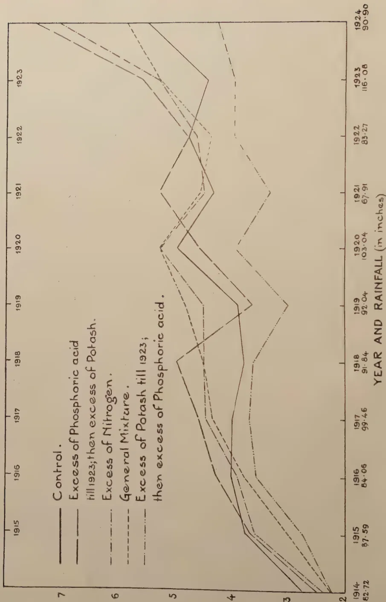
Legend:
| Year | 1914 | 1915 | 1916 | 1917 | 1918 | 1919 | 1920 | 1921 | 1922 | 1923 | 1924 |
|---|---|---|---|---|---|---|---|---|---|---|---|
| Rainfall (inches) | 82.72 | 87.59 | 84.06 | 99.46 | 91.84 | 92.04 | 103.04 | 67.91 | 83.27 | 116.08 | 90.90 |
CHANGES-OVER.
Weekly Individual latex yields between July 1st, 1922, and Dec. 31st, 1924.
| Percentage of number of trees. | |||||
|---|---|---|---|---|---|
| General mixture | Excess of Nitrogen | Excess of Phosphoric acid till 1923; then excess of Potash | Control | Excess of Potash till 1923; then excess of Phosphoric acid. | |
| % | % | % | % | % | |
| Above 10,000 cc - - | 3.5 | — | 5.9 | 4.0 | — |
| Between 8,000 cc and 10,000 cc - | 10.4 | 4.9 | 5.9 | 8.0 | 5.7 |
| „ 6,000 cc and 8,000 cc - | 10.4 | 17.0 | 17.6 | 8.0 | 14.3 |
| „ 4,000 cc and 6,000 cc - | 24.2 | 34.1 | 29.5 | 24.0 | 17.1 |
| „ 2,000 cc and 4,000 cc - | 37.7 | 34.1 | 32.0 | 48.0 | 42.9 |
| Below 2,000 cc - - | 13.8 | 9.8 | 8.8 | 8.0 | 20.0 |
| Gms. | Gms. | Gms. | Gms. | Gms. | |
| Average number of grams of dry rubber obtained from 100 cc latex over period 1914 to 1924 - | 36.1 | 37.2 | 36.1 | 34.1 | 34.7 |
The trees were planted in 1913 in avenues, 15' × 15' with 40' between the avenues. The manures were first applied in 1916. There are three manurial mixtures, in the first Nitrogen is omitted, in the second Phosphoric acid, in the third Potash. These three treatments are duplicated, but in the one case lime is applied at the rate of 8 lb. per tree while in the other no lime is applied. The Control plot receives lime but no manures. The manures are applied in shallow trenches in the same manner as in the old manurial experiment; the lime is broadcasted over the whole plot and disc-harrowed or forked in.
Tapping was started in 1922, a single cut to the left on a third at 16°, 24 inches from the ground. The plots are flat and very even.
The number of trees in tapping in each plot, the increase of girth since the beginning of the experiment, the manures applied, and the yields per tree will be found in the attached table. The first point which attracts attention is that the Control plot (lime only) has given the highest yield in 1922 and 1923 and nearly the highest in 1924. In addition it has given the largest increase in girth and the richest latex. It should be noted that this is the end plot; it is bounded on three sides by a broad road and has free access to light and air on those three sides. In the absence of any entirely untreated plots however it is impossible to say whether this superiority is due to the action of the lime or is fortuitous.
16
[JULY, 1925.
In the other plots the variations in the average yield per tree are generally small and are no more than could be accounted for by the fortuitous inclusion of varying numbers of high yielding trees or slight soil differences.
If the yields of the plots receiving lime and manures are compared with those receiving manures but no lime, we find a slight difference—6 oz. per tree—in favour of the limed plots. It is estimated that the cost of lime and application has been about 38 cents per tree during the whole period of 3 years, so that if it is assumed that the increase of 6 oz. per tree is due to the action of the lime the application would be profitable only if the additional rubber obtained was sold at over one rupee per lb. It must also be noted that the average girth increase is slightly greater in the limed plots and that the average weight of dry rubber per 100 cc of latex is greater.
In considering the individual mixtures we find the yields of the two plots for which nitrogen is omitted the same in each case—8 lb. 6 oz. per tree for the whole period. The omission of Nitrogen does not seem to have had any depressing effect, nor can any such effect be attributed to the omission of Phosphoric acid in plots 2 and 6.
The plots from which Potash are omitted have given the two lowest yields; but it would not be safe to assume that lack of Potash is responsible.
The incidence of disease is slight and insignificant. The appearance of all the plots is very healthy and there is no visible difference between them.
AVENUE RUBBER MANURIAL EXPERIMENT, 1924.
Experiment Station, Peradeniya.
| Plot | No. of tree-tapped | Treatment of Plot | Average increase girth 1916-24 inches | Average number of dry rubber to 100 c c latex | Average yields per tree of dry rubber | |||
|---|---|---|---|---|---|---|---|---|
| 1922 lb. oz. | 1923 lb. oz. | 1924 lb. oz. | Whole period lb. oz. | |||||
| Control 1 | 21 | Lime only at 8 lb. per tree | 31.72 | 35.04 | 2 3 | 3 1 | 3 11 | 8 15 |
| 27 | Superphosphate 138 lb. per acre Sulphate of potash 147 lbs. per acre |
30.56 | 33.75 | 1 13 | 2 13 | 3 12 | 8 6 | |
| 2 | 28 | Lime 8 lb. per tree Nitrolim |
30.20 | 30.49 | 2 0 | 2 14 | 3 10 | 8 8 |
| 28 | 277 lb. Phosphoric acid 120 " omitted |
|||||||
| 3 | 34 | Lime 8 lbs. per tree Nitrolim |
30.72 | 30.84 | 1 12 | 2 6 | 3 6 | 7 8 |
| 34 | 277 lbs. 138 " Potash omitted |
|||||||
| 5 | 29 | Superphosphate Basic slag |
29.94 | 31.98 | 1 15 | 2 13 | 3 10 | 8 6 |
| 33 | Lime 8 lb. per tree | |||||||
| 6 | 33 | Same manures as for 1 but no Lime | 28.04 | 29.92 | 1 14 | 2 7 | 3 4 | 7 9 |
| 37 | " " " " | 29.43 | 30.81 | 1 11 | 2 5 | 3 7 | 7 7 | |
A. R. SANDERSON, F.L.S.
The following is a lecture delivered by Mr. A. R. Sanderson, F.L.S., at a recent meeting of District Planters held at the Rantau Club. Mr. Sanderson states that great interest was taken in the subject and that an interesting discussion followed the lecture. The question of "conditioning" soils in old rubber appeared to be new ground to the majority of planters present at the meeting.
The subject of cover plants for rubber plantations has acquired constantly increasing interest during the last few years. While the price of rubber was very low cover plants of various kinds were suggested for use as a means of reducing weeding costs, more particularly over immature areas, and in those areas which under the particular circumstances then ruling it was found not profitable to continue in tapping. In the early days of rubber planting clean weeding from the start was the rule and hence one may say that particularly all the old rubber areas have been clean weeded from the time of planting. The only exception to this was the use of various plants usually more or less shrubby species as green manures. Such plants did to a certain extent protect the soil from deterioration due to exposure to the sun but they were far from successful in preventing soil erosion. It may be pointed out here that a plant which may be excellently used as a green manure is not necessarily of much use as a cover plant to prevent soil erosion. For this purpose the best plants are those with a creeping or prostrate habit of growth, forming eventually a complete protective carpet of vegetation. The present condition of, at any rate, some of these older areas has raised grave doubts as to the wisdom of clean weeding. In the present paper I do not propose to discuss covers as green manures.
The fertility of the soil depends on a large number of factors, not all of which always receive the consideration due to them. Certain chemical elements must be present in an available form as plant food and in sufficient quantity to satisfy the needs of whatever crop is cultivated, i. e. the mineral constituents of the soil must be such as will enable the plants to complete their normal development without check. In addition the physical properties of the soil—and these are of very great importance—must be such that efficient drainage and adequate aeration is allowed for. No matter how rich the soil is in its mineral constituents, unless the physical properties are good the soil may not be fertile. Climatic conditions must be favourable. It may be mentioned here that for root systems to develop properly aeration is just as essential as for the aerial portion of the plant. This is a point which is not always recognised and it is very closely bound up with efficient drainage,
18[JULY, 1925]i. e., the passage of rain water from the surface of the soil downwards. The presence of a certain amount of humus in the soil is an important consideration. The conditions mentioned should ensure the presence in the soil, especially the top soil of a rich microfauna and flora which is frequently an index of its fertility, since this is dependent on the three main conditions which govern the fertility of the soil. Any conditions set up in the soil which tend to destroy its indigenous population must then be inimical to its fertility. The soil population (microfauna and flora) is at a maximum a little below the surface (in the top soil) and from that point downwards gradually dwindles and finally almost completely disappears. The depth to which it persists depends largely on aeration, which as before stated is closely bound up with drainage, i. e. the passage of rain water through the soil. I think sufficient has been said to emphasize the extreme importance of the physical properties of the soil, as this is concerned with its general fertility. Usually land freshly opened up from virgin jungle is wonderfully fertile containing a sufficiency of mineral matter and humus, and possessing the necessary physical properties. The fact that, at any rate in many cases, it deteriorates, can scarcely be questioned. How does this happen and how can it be prevented at any rate in part?
Casual observation of most old rubber areas and comparison with adjacent freshly opened jungle areas will show at once what a striking difference there is in the texture of the soils. To what is this difference due? One, and perhaps the main cause, is the conditions to which freshly opened up areas are or have been subjected.
The land is cleared and exposed to the intense erosive action of tropical rains for a period of 3 to 7 years, the natural result being that long before the plantation can afford sufficient protection, the bulk of the valuable top soil has been carried off to the nearest river. The large seeds, bits of charred wood, small stones, even more or less decayed leaves standing on isolated pinnacles of top soil show at a glance the depth of soil lost. They also indicate how easily this valuable asset could have been retained. That it is a valuable asset to the plantation I think none will question. It contains the largest amount of fertility, the most favourable conditions for bacterial growth and activity. It is the only part of the soil that we can change materially, hence its importance. One of the important chemical elements necessary to soil fertility is nitrogen. The chief source of this is the decaying plant residues (humus material) and the air. In the soil this nitrogen is fixed, that is taken up and held by organisms in root nodules of leguminous plants and by certain free living soil bacteria—azotobacter—so long as the land is covered—nitrogen is gained and the major portion stored, i. e., the stock of nitrogen is increased—it may be but slowly, but still the increase goes on up to a point. Immediately the land is uncovered—i. e., allowed to lie fallow, the gain in nitrate commences often in a very easily soluble form, i. e., this represents merely a change of one form of soil nitrogen to another. There is no absolute gain but as you will readily understand, there may be and often is, more especially under tropical conditions of heavy rainfall, a very rapid and serious loss, the land tending to become poorer in nitrogen from the loss of nitrate. It should be remembered too that this element is most
JULY, 1925.]19expensive to replace as manure. Practically all this nitrogen material is in the top soil, hence the loss of this means the loss of nitrogen also and frequently means the loss of the humus material which should be the basis of future supplies.
E. J. Russel in "Soils and Manures" puts this matter very briefly but pointedly as follows:—
"Land in sod gains nitrogen—Land in fallow gains nitrate."
From the foregoing it is now easy to understand what happens in the early stage of planting up a newly cleared area with Hevea.
Once the land is cleared the nitrogen present is rapidly converted into nitrate and the young plants do very well indeed, but the pace cannot be maintained for many years. The new crop plus the erosive action of tropical rains rapidly uses up the greater portion of the principal (nitrate) and more is not fixed nor made available at the same rate. A slowing down follows, succeeded eventually by a period of stagnation, for what applies to nitrate applies in a lesser degree to other soluble mineral constituents. The necessity of manures in the form of nitrate is beginning to be realised. If this were the end of the trouble and merely six to eight or even more inches of soil had been removed it would be bad enough, but the exposure of the underlying subsoil to the alternating action of heavy rains and hot sunshine is an added penalty which ultimately strictly limits the soil's fertility.
E. J. Russel writing on the effects of heavy rainfall in Soils and Manures states—"Soil exposed to heavy rainfall tends to become reduced to hard insoluble residues of unchanged mineral fragments, i. e., the matter is not in an available form as plant food, finally it may become barren through loss of plant food and sour through loss of lime. Lime is lost chiefly as carbonate. On the other hand a soil in a dry region of very low rainfall keeps practically all its soluble constituents intact, indeed it may become so heavily charged with them as to become barren through this very excess, e. g., Alkali lands of U. S. A. Nitrate lands in Chili. Again, heavy rainfall may wash the soil bodily away and leave only the bare rock or a quite impossible subsoil. (This latter is the case most frequent in tropical regions.) It is not infrequent in lands of violent storms, especially where man has come in and removed the native vegetation that once afforded some—(the only)—measure of protection."
The exposed subsoil soon becomes baked hard—in some cases almost cement like, rain water can enter only through occasional cracks, and it may be that 90 per cent. or even more of the rain which falls upon such a surface simply flows off leaving very soon a hard baked surface once more. The failure of the rain to penetrate the soil means that aeration of the soil is insufficient. The soil population is at a minimum, the amount of humus material is negligible. The nitrogen and nitrate content is low—dangerously so. The power to develop fresh stock of this element is non-existent and root development quickly suffers. The result soon shows in a general retardation of development all round. As the plantation increases in age the change for the worse becomes more and more marked, renewal becomes slower and slower, and yields fall off. Different methods—silt pitting, etc.—are then suggested as a desperate effort to improve matters, efforts which at the best can never replace the top soil in its original state.
20[JULY, 1925.On flat or comparatively flat lands where there is little actual loss of surface soil by the action of heavy rain and where the drainage is excellent, the soil being porous and easily permeable, the action of uncovering, i. e., removal of original vegetation and keeping it in that state for a considerable time means loss—especially of the more soluble substances. For, as previously pointed out, uncovered land gains nitrate but not nitrogen, i. e., the fixed nitrogen is quickly lost as nitrate and more is not stored.
The whole problem then is one regarding the retention in the main of the original top soil, and keeping this in a state of fertility, i. e., more particularly retaining those physical properties and chemical elements upon which soil fertility so much depends. An effective cover plant is undoubtedly the best method known at present for doing this.
From what has already been said about soil erosion, it is fairly obvious that the sooner a cover is established the better, i. e., as soon as the land is opened up. It is certainly not wise to first expose the land, and then wait one or two years until a part and perhaps the major part of the top soil and its soluble salts have gone. By that time, if a cover is planted it will probably develop much more slowly than if put in while all the top soil was present, hence a double loss will be incurred. The establishing of a cover does not at once dispense with weeding, for lalang will still have to be eradicated. In addition to retaining the surface soil or top soil a good cover will add to the humus content of the soil by the constant decay of the root system, leaf fall, etc. and practically all the mineral matter of the plant is also finally returned to the soil.
I cannot pass over the opportunity to emphasize the fact once more that the primary reason for establishing a cover crop is to retain the top soil and the effect on weeding costs should be a secondary consideration.
Regarding the third point, the ramification of the root system of a cover crop—fibrous rooted one—to considerable depths, keeps the soil open and friable—a most important quality for fertility, enabling the quick and easy passage of water downwards.
The arguments so far have been in favour of a cover plant but certain arguments have been raised from time to time against the use of these.
It has been stated that :—
Of course they take up moisture from the soil, but, and this is most important, they first ensure that a large portion of the rain which falls passes into and not merely flows over the surface of the soil. It is surely better for the rubber tree to have an ample water-supply and share it rather than have an altogether inadequate supply for itself.
JULY, 1925.]21It should be remembered too that during time of drought a reasonably good cover actually conserves moisture in the soil.
2. They harbour obnoxious weeds and increase weeding costs. Some do, but such can be avoided, though again covers must not in general be regarded as a means of dispensing with weeding.
3. Some encourage diseases of rubber.
There is a certain amount of danger from the woody or shrubby ones, the large roots of which persist for a long time but these can be avoided, now that there is a greater choice.
4. The difficulty of eradication is against their use.
This depends largely on choice.
5. There is danger from fire.
This is a real danger with some, but again careful choice should eliminate it.
6. The young Hevea plants make most rapid progress in clean weeded areas. Answered under nitrate, c.f. garden plots from grass land.
1. It should be a plant of rapid growth under the particular conditions obtaining, so that it may be effective quickly.
2. Seed should be obtainable in sufficiently large quantities at a reasonable rate. This condition—unfortunately at present rules out many indigenous plants which might be useful.
3. If an annual it should seed freely so that fresh crops are continually coming on.
4. It should not be subject to the diseases which attack Hevea.
5. The root system should preferably be fibrous.
6. A low habit of growth, so that it can be sown thickly is a desideratum. A ground creeper with roots at the nodes is to be preferred.
7. Ease of eradication or natural dying back when sufficient shade is established to dispense with it is desirable.
Surface mulching should present no difficulty and is preferable.
8. A legume which fixes nitrogen in root nodules is preferable.
9. Care should be taken that (proved by experiment) the plants will develop well under the particular soil and climatic conditions prevailing.
10. Plants easily raised from seed are to be preferred to those which necessitate propagation by cuttings.
It will undoubtedly not be easy at present to find a plant which satisfies all the conditions laid down but at any rate one can examine the known cover plants about which information is obtainable and pick out what seems to be the best for our purpose.
First I will merely submit a list of the cover plants which have been tried on various rubber growing areas and then deal with each separately.
22[JULY, 1925.The following list of species which I don't claim contains all, have been used or are being tried experimentally as cover plants :—
Some of the foregoing should be avoided unless they are the only ones adapted for the special purpose in hand.
Tephrosia candida grows into a woody bush 1—4 ft. or more in height and requires regular pruning. The persistent thick woody root system is subject to attack by Poria hypobrunnea (uncommon in Malaya) which also attacks Hevea. This plant is frequently useful on poor soil and will do well under partial shade. As a cover it is far from ideal as heavy rain is apt to cut deep channels between the plants or plant rows.
Crotalarias are apt to grow woody and tall and are subject to Pink Disease on some areas. The same objections hold for this as for Tephrosia.
Centrosema Plumieri fulfils many of the conditions laid down. It is a useful cover (the same applies to Centrosema pubescens). It is essential to plant early to ensure rapid growth and it does not as a rule flourish in poor soils. (Propagated from seed.) Established early it can withstand considerable shade.
Vigna Oligosperma (Dolichos Hoseii) "Sarawak Bean." This is a very useful cover and may be propagated from cuttings or from seed. It grows well in partial shade and can therefore be used or continued at a later stage than Centrosema sp. Like the former it is liable to attack by fungi which cause the leaves to die off and the plants then die back in patches. At present they are being tried experimentally from seed in old rubber. So far it appears to be doing quite well.
Calopogonium mucunoides. According to the Archief, May, 1924, this wild leguminous plant was first tried in Sumatra in 1922. It grows in the open and is not tolerant of shade. Thinly sown in shallow furrows between two rows of young rubber, the fresh seed germinates regularly after a few days, and the plantation is so completely covered within six months by the
JULY, 1925.]23vigorous growth that there is no further chance for weeds—Lallang must be kept out in the meantime. Roots form at the nodes. Flowering begins after 2 months and later the hairy pods develop. This proceeds continuously and produces an enormous quantity of seed. After uprooting, so many young plants quickly develop that the soil is completely covered again within a short time. The plants remain so succulent that there is no danger of fire as with mimosa. On all soil types, even sand permatangs, the plant grows vigorously if there is sufficient light. (Archief Voor de Rubber Cultuur, May, 1924.)
This plant is being tried experimentally on two neighbouring estates. On one area, where the soil is exceptionally poor the plants appear to be doing well and quite 90 per cent. seed germinated.
Indigofera endecaphylla. This plant forms an excellent ground cover from seed. There is a tendency to die back in dry weather, but vigorous shoots are again put out after rains (tried in Ceylon).
Pueraria javanica. This plant creeps readily and roots at the nodes. It is not so good and thick a cover as Vigna Oligosperma nor as Centrosema sp.
The various species of Desmodium and Cassia mimosoides are at present being tried in Ceylon.
Mimosa invisa requires careful control and is objectional on account of spines, liable to fire in dry weather owing to dying down.
Passiflora sp. unless carefully controlled envelop the young trees and may do considerable harm.
Finally quite a large number of indigenous species of low growing herbaceous plants (creepers) might prove adaptable as cover crops, but only experiments on a sufficiently large scale could demonstrate the utility or otherwise of these.
It would appear that the number of species really fulfilling the major part of the conditions of the ideal cover is strictly limited. Four at present are outstanding, viz :—
Centrosema Plumieri
,, pubescens
Vigna oligosperma
Calopogonium mucunoides.
Once the cover is established it may be continued and indeed should be continued until the shade provided by the developing rubber trees becomes too much for it. Then it will die down naturally or if preferred may be replaced by a second cover established previously which will flourish under a fair degree of shade.
Some agriculturists in Java now recommend the planting of two or more cover plants together. Each cover appears to do better than when grown alone and if one dies off for any reason it is soon replaced by the remainder.
The great majority of covers die off under intense shade, i. e., they die off as covers, but may continue in more or less isolated patches. In any case they have achieved their object and kept the soil in a fine state of fertility.
24[JULY, 1925.The establishing of covers on old areas usually presents considerable difficulty. The soil is as a rule totally different in character from that of the new clearing and there is in addition the effect of shade to be considered. Consequently the choice of cover is more limited. Two plants which are said to resist shade very well are Centrosema pubescens and Vigna oligosperma. Of the former I have no experience, but the latter from what I have seen would appear to be worthy of further trials. The method of establishing covers in old rubber adopted in Java is to form a ridge of tops oil consisting largely of leaf mould between the rows and sow the seed in that. Once established the cover then gradually spreads on each side until the cover is complete. Later on if considered advisable this could be mulched in. There is little doubt that the soils in most old rubber areas would be greatly benefitted by this means.
It has been stated that Centrosema Plumieri will continue to grow under old rubber if well established in the early stages, but of this I have no first hand experience.
Experiments with Vigna oligosperma under shade in areas where the rubber is over 20 years old have been started—propagation from seed only. Present indications suggest that this may be very successful.
There are two final covers to be considered, the first being a cover of mixed weeds, i. e., a mixed collection chiefly of indigenous low growing plants, consisting in the main of various small grasses, low growing herbaceous plants, and in some cases small ferns, Selaginellas, etc.
So long as the lallang and bigger plants are kept out, there appears to be little objection to this kind of cover, and its efficiency in preventing or at least limiting the extent of erosion has been proved in some cases.
Concerning a grass cover (not lallang) there is always the proximity of large areas under lallang to be taken into account and the consequent liability to attack by cockchafer beetles. This may on occasion become serious, since once the cockchafer grubs appear in large numbers they do not respect the roots of the rubber plants and may do extensive damage.
Soil, Physics and Management
{ J. G. Mosier, B.Sc.
Soils and Manures (Cover Plants)
{ A. F. Gustafson, M.Sc.
Tropical Agriculturist
Aug. and Dec., 1924
T. Petch
Soils and Manures
Green Manures and Manures in the Tropics
E. J. Russel
Archief Voor de Rubber Cultuur, May, 1924
P. de Sornay
Bulletin of the Rubber Growers' Association, Vol. VII, No. 3.
JULY, 1925.]25PROF. F. HARDY, M.A.
Through the courtesy of Mr. E. Hannaford Richards, B.Sc., F.I.C., Managing Director of the Agricultural Developments Company, we are able to publish further details of the Adco process, and to make certain amendments to former articles which have appeared in this Journal (Vol. I, No. 8,* August, and No. 9* September, 1924, pp. 116 and 133).
At the outset, it is necessary to state that the proprietors of the Adco process now desire to describe their product as synthetic rather than artificial manure, since this term has given the erroneous impression that the material is of an inorganic or chemical nature, whereas actually it comprises very nearly the same components as farmyard manure (in particular the valuable organic matter), with the difference that its ingredients have been synthesized or built up from the same main raw material as farmyard manure by the agency of added bacterial stimulants, but without the intervention of farm animals.
As a result of recent investigations, it has been demonstrated that the decomposition of plant residues through the activity of micro-organisms, takes place in several stages. First of all, sugars, pentosans and starches are consumed by a variety of organisms, notably fungi. It seems likely that these carbohydrates are built up into living cell material (protein), which is itself broken down at a later stage, providing the most available type of organic matter in the finished manure. Cellulose itself decays comparatively slowly, and may be regarded as a "scaffold" supporting and distributing the decomposition products of the other simpler carbohydrates. Contrary to former opinion, it has also now been proved that reducing sugars in moderate amount, and higher nitrogen compounds (if not bactericidal), actually assist rather than hinder the formation of a satisfactory manure.
In common with all living plants, the micro-organisms concerned in cellulosic fermentation, require nitrogen for their sustenance. Frequently, the amount of nitrogen contained in the raw material upon which they act, is insufficient for their needs. Consequently, it is necessary to add nitrogenous compounds to augment the supply naturally present, if a satisfactory fermentation is to be obtained. In the case of cereal straw, usually 0.7 per cent. of nitrogen, measured on the dry weight of the straw, is required to make up this deficit. For cane trash, the necessary amount is probably nearly the same. The additional nitrogen may be supplied in the form of some inorganic nitrogenous compound (Adco process), or as urea contained in the urine of farm animals (Mauritian method, as well as the ordinary farmyard or pen manure process).
In their earliest experiments, the Rothamsted investigators used ammonium carbonate as a source of nitrogen, but for reasons of cost, sulphate of ammonia was employed in later large scale trials. This gave fairly good results, but its sulphuric acid content was objectionable, while the high solubility of the salt led to accidental loss in distribution. Mr. Richards states
*Reproduced in Tropical Agriculturist, Vol. LXIII, No. 5, November, and No. 6, December, 1924, pp. 282, and 343.—Ed. T. A.
26[JULY, 1925.that for two years past the Adco Company has manufactured its own reagent which contains no sulphate of ammonia. The new reagent ensures a neutral or slightly alkaline fermentation, while the phosphate nitrogen ratio in the finished manure is greatly improved. The formula of the reagent has not yet been divulged.
The extent to which fixation of atmospheric nitrogen may proceed during the manufacture of synthetic manure, through the agency of specific micro-organisms, has apparently been unduly exaggerated. Mr. Richards' laboratory experiments, commenced in 1915, and repeated with the co-operation of Dr. Hutchinson in 1918-19, have conclusively shown that, even under the most ideal conditions, the actual gain due to the fixation of atmospheric nitrogen, seldom exceeds 0.5 per cent. of the dry weight of the straw employed as raw material. Usually it is much less. In large scale trials with straw heaps, the maximum gain was found to be only 0.1 per cent. Thus little additional advantage can be expected from the co-operation of atmospheric nitrogen fixers.
In the manufacture of synthetic manure by the Mauritian method, the writer found that the increase in nitrogen over that contained in ordinary Trinidadian pen manure, was only about 0.036 per cent. of the weight of the final manure, or about 0.156 per cent. of its dry weight, which amply agrees with Mr. Richards' experience.
The fact that the increase in nitrogen due to atmospheric nitrogen fixers is relatively small, is explained on the grounds that there is usually only a limited amount of suitable carbohydrate (sugar, pentosan starch), available for the nourishment of the micro-organisms that can assimilate either atmospheric nitrogen or chemically combined nitrogen, and that, when this supply has been exhausted, no further assimilation can occur. Consequently fermentation then proceeds very slowly.
On the other hand, if the supply of suitable simple carbohydrate in the raw material is considerable, but at the same time, the amount of nitrogen present in the manure is insufficient, the nitrogen assimilating micro-organisms may draw on the reserve of nitrate nitrogen in the soil, and the manure may then exert a depressing effect on crop yield when first applied to the land. Herein lies the danger of employing too much cellulosic litter in the manufacture of ordinary farmyard manure, and indeed of Mauritian pen manure also.
For obvious reasons, it is not easy to arrange the proper balance of nitrogen to carbohydrate when manure is made by treading litter under stock. On the other hand, once the normal composition of the raw material has been determined, the Adco process enables a well-balanced manure to be produced without any risk of those losses of valuable fertilising constituents which are generally recognised as inevitable under the older systems.
This, then, is the secret of the Adco process. By means of a long series of laboratory experiments augmented by numerous large-scale trials, the Rothamstead workers have gradually evolved a formula and a mode of operation which yield results that are highly satisfactory in respect to the manurial quality of the final product. It only remains to be seen whether or no the use of Adco synthetic manure compares favourably with other systems of manuring when considered in economic aspect. Various trials are being made, not only in Great Britain, but in many tropical and sub-tropical countries as well, in order to settle this question, and it may interest our readers to learn that large scale trials will probably soon be inaugurated in Trinidad under the joint auspices of the Trinidad Department of Agriculture and the Imperial College of Tropical Agriculture. The results of these trials, when available, will be published in this Journal.—Tropical Agriculture, Vol. II, No. 5.
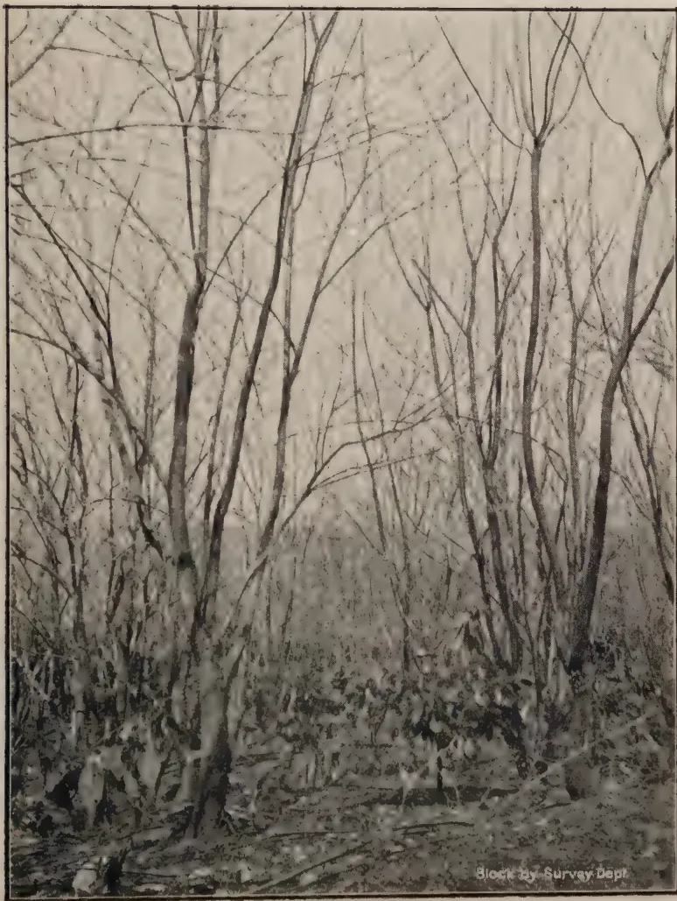
A black and white photograph showing a dense thicket of bare, defoliated trees, likely Dadap shade, with young cacao plants visible at the base, being attacked by caterpillars. The trees are tall and thin, with no leaves, creating a skeletal appearance. The ground is covered with low-lying vegetation, including the young cacao plants mentioned in the caption. The overall scene depicts a state of defoliation and pest damage in a forest environment.Block by Survey Dept.
Plate I.—HEAVY DADAP SHADE DEFOLIATED BY THE CATERPILLARS OF TARAGAMA DORSALIS—YOUNG CACAO PLANTS BEING ATTACKED.
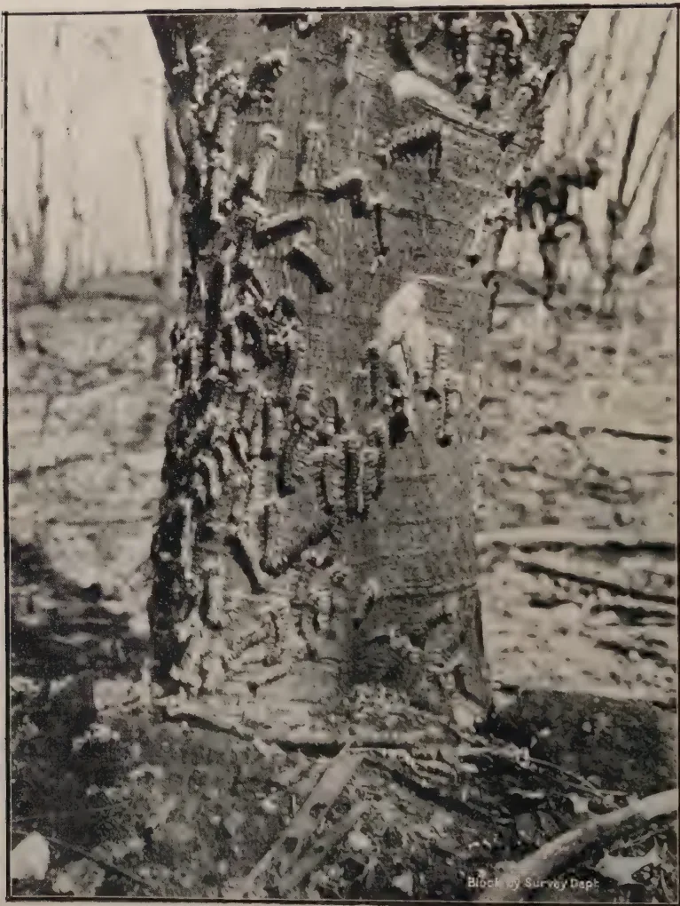
A black and white photograph showing a dense cluster of caterpillars of Taragama dorsalis on the trunk of an old tree. The caterpillars are numerous, small, and dark, clinging to the rough bark of the tree trunk. The background shows a forest floor with fallen branches and other trees.Block by Survey Dept.
Plate II.—CATERPILLARS OF TARAGAMA DORSALIS ON
TRUNK OF OLD DADAP.
(Taragama dorsalis Wlk.)
J. C. HUTSON, B.A., Ph. D.
Entomologist, Department of Agriculture, Ceylon.
Early in October, 1924, the Acting Superintendent of an estate in the Kandy district reported that a fairly large area in a young cacao clearing was being attacked by a caterpillar pest, and submitted specimens of the cocoon stage for identification. These specimens were seen to be the cocoons of Taragama dorsalis, a large hairy caterpillar which sometimes causes serious defoliation of dadap (Erythrina spp.) and albizzia. Previous reported outbreaks of this pest in other localities during the past twenty-four years have indicated that while dadap and albizzia are the favourite food plants of these caterpillars, the main crops of the Island such as tea, rubber, etc., may also be attacked to a slighter extent. It was suggested that in this instance the pest had originally started on dadap and had attacked the cacao later. Instructions were given to collect and destroy the caterpillars and cocoons, wherever possible.
The pest was mainly in the cocoon stage at the time that it was first reported, and, although a large number of cocoons and caterpillars were collected from the young cacao, dadap trunks, and other accessible places near the ground, it seems probable that many of the cocoons and caterpillars resting high up among the partially stripped, tall dadap shade escaped notice. The moths emerging from these undetected cocoons produced a very much larger brood of caterpillars which also passed unnoticed during their young stages when they would do comparatively little damage.
Towards the end of November, the Acting Superintendent reported that the pest had become serious, and the writer visited the estate the next day and went through the devastated area with the Acting Superintendent. We entered the 100 acre cacao clearing by a road running along its lower boundary and at this point the high dadap shade was normally thick and caterpillars could only be detected after a careful search. As we advanced, the caterpillars became more and more in evidence and they were soon to be seen and heard feeding in their thousands high up on the dadaps, which were being rapidly defoliated. We gradually came out into the area of complete defoliation and full sun-light (see Plate I.). Throughout this area the caterpillars, with the exception of those which had already pupated, were deserting the bare dadap tops and were coming down in search of food or of convenient spots in which to pupate. Many of them were full-grown and were forming their cocoons at the bases of dadap trunks, on any
28[JULY, 1925.old stumps, on old dadap loppings and on the young cacao plants. Others not fully developed were wandering restlessly about in search of food and finding it only on the young cacao, which, however was not being devoured with the greediness that one might have expected from large and hungry caterpillars. Plate II shows caterpillars and cocoons on dadap trunk.
At that time the dadaps had been completely stripped over some 25 acres and the cacao in the middle of this area had been fairly badly damaged. About another 30 acres of dadaps had been partially defoliated, while the cacao in this area was hardly touched.
During the height of the outbreak gangs of coolies were employed in collecting the caterpillars and cocoons, but they seemed to be making no impression on the vast swarms of the pest, and areas cleared one day were found to be just as heavily infested the next day. The Acting Superintendent, in view of the difficulty of coping with the pest by ordinary methods of collection and destruction, and in view of the impracticability of controlling the pest by the application of insecticides, decided to adopt more drastic measures and lop the whole acreage of dadaps, so as to prevent as far as possible the further spread of the pest. This campaign was started as soon as possible from the four sides of the field and was carried through to the centre. All the loppings were burnt and all caterpillars and cocoons were collected throughout the area and destroyed. (See Plate III.)
A visit to the estate early in January showed that the dadaps lopped early in December were putting out new foliage which was being slightly attacked by Taragama larvae. These were being systematically collected and destroyed, and the pest was being kept under control in the 100 acre clearing of young cacao in which it had originally appeared.
Towards the end of February, the Acting Superintendent,* in reply to further inquiries, stated that the pest had appeared on the dadaps interplanted among a 130 acre clearing of coconuts, among a 26-acre clearing of tea and among a 12-acre clearing of pepper. As a precautionary measure the dadaps in all these areas were lopped and the caterpillars destroyed. Some of these areas were widely separated from the cacao area originally attacked, the pepper clearing being some four miles distant as the crow flies, while the tea clearing is two miles away in the opposite direction.
Recent inquiry indicates that the pest has disappeared, but this does not mean that it has been completely wiped out, since total eradication of a caterpillar pest after an outbreak of such severity can hardly be expected.
All the time of my visit it was noticed that quite a fair percentage of the caterpillars were dying from the effects of a "wilt" disease, which was spreading rapidly and which was probably of some assistance in reducing further the numbers of those caterpillars which had escaped the general clean-up. Under normal conditions this pest, in common with other caterpillar pests in Ceylon, is controlled by its parasitic enemies. There comes a time when the parasites are almost exterminated by their own enemies or die out through lack of food, and the caterpillars are able to breed up and
* I am much indebted to Mr. R. V. Routledge, Acting Superintendent of the estate, for all the assistance he gave me during my visits and for the information he kindly supplied at various times during the course of the outbreak.
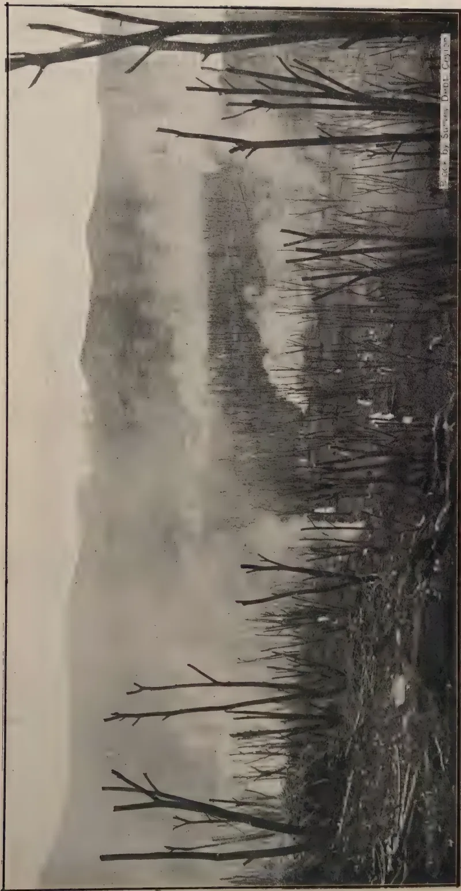
Photo by Stevens Dept. Collection
Plate III.—THE LOPPING OF DADAP SHADE AND THE BURNING OF THE LOPPINGS TO DESTROY THE CATERPILLARS AND COCOONS OF TARAGAMA DORSALIS
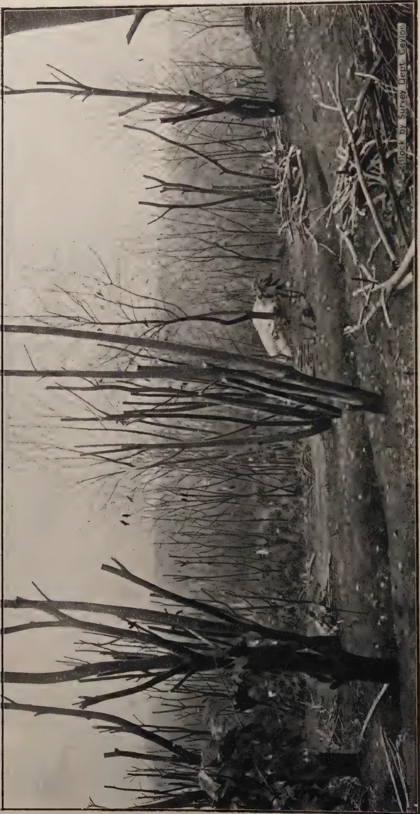
A black and white photograph showing a forest where trees have been stripped of their leaves, likely for shade. The ground is covered in debris and fallen branches. A small white bird is perched on a branch in the center-right of the frame. The sky is overcast and hazy.Block by Survey Dept. Caylor
Plate IV.—THE STRIPPED DADAP SHADE BEING LOPPED. CROWS AND OTHER BIRDS ARE BEING ATTRACTED TO FEED ON THE COCOONS OF TARAGAYA DORSALIS.
JULY, 1925.]29increase under more favourable conditions. After the caterpillars have increased enormously over a comparatively small area then the "wilt" disease may come on suddenly, perhaps favoured by the conditions of overcrowding and under-feeding. The pest is therefore again reduced to a position where it can be kept down by its insect parasites until they themselves suffer in their turn, after which the pest once more gains the ascendancy. Plate IV shows crows and other birds attracted to feed on the cocoons.*
Egg. Broadly oval, almost spherical, in diameter about 2 mm (1/12 in.), whitish, mottled with brownish-purple spots, the larger spots being arranged in two groups, one around each pole (see Plate V, fig. 2 a, b, & c).
Larva,—first instar, (see Plate V, fig. 4). General body colour dark brown to blackish; with paler bands between the segments. The head is black, and the body is covered with rather long whitish to greyish hairs borne on lateral and dorsal tubercles.
Larva,—second to fifth instars. From the second instar onwards the general body colour varies considerably in individual larvae from greyish black to reddish brown. In the second instar larva (see Plate V, fig. 5) the tufts of urticating or stinging hairs appear on the dorsal surface of the second and third segments of the thorax (see Life History and Habits). The second to eleventh body segments have two pairs of reddish dorsal tubercles bearing short brownish to blackish spiny hairs; the anterior pairs are larger and nearer together than the posterior pairs, those on the tenth segment being quite conspicuous. The sides of the body are covered with rather long ochreous hairs interspersed with black hairs arising from whitish lateral tubercles, those on the thoracic segments being more conspicuous. A full-grown larva may attain a length of nearly 4 inches (see Plate V, fig. 6). In the greyish-black form of larva shown in Plate V, fig. 6 the dorsal surface is usually marked with conspicuous comma-shaped whitish areas separated by inverted Y-shaped blackish areas.
Cocoon. Whitish to pale brownish, somewhat shiny, formed of closely woven silk sparsely covered with small patches or lines of urticating hairs (See Plate V, fig. 7).
Pupa,—(inside cocoon). Of a dark brown colour and covered with short brown hair, abdomen with three light-brown circular bands between the segments (see Plate V, fig. 8).
Moth, female. General colour of moth, when seen at rest with wings folded over the body, is of a deep reddish-brown colour with whitish head, collar and thorax. In the female moth, shown in Plate V, fig. 1 with wings spread, the darker shaded areas are various shades of reddish brown while the lighter areas are whitish to greyish white. Wing expanse from 3.4 inches.
Moth, male, (Plate V, fig. 2.). Somewhat similar to female in general colour and markings, but much smaller in size. Wing expanse about 2 inches.
Distribution of Taragama dorsalis (from Hampson):—North-Western Himalayas; Calcutta, throughout South India and Ceylon; Philippines; Borneo; Java.
Reported outbreaks of Taragama dorsalis in Ceylon, giving date, district
* My thanks are due to Mr. E. W. Keith for his kind permission to include the illustrations of the campaign shewn in Plates III and IV. These photographs were taken by Messrs. John & Co., Kandy.
30[JULY, 1925.and food plant :—
October 1901, Veyangoda, Albizzia ; November 1901, Kelani Valley, (not known) ; March 1908, Kelani Valley, Albizzia and Tea ; August 1909, Gampola, Dadap and Rubber ; November 1913, Dikoya, Dadap and Tea ; November 1919, Kadugannawa, Dadap and Tea ; February 1920, Galaha, Dadap and Tea ; April 1920, Kegalle, Dadap ; September 1920, Kadugannawwa (same estate as in November 1919), Dadap ; August 1921, Nawalapitiya, Dadap ; November 1923, Anuradhapura, Premna ; November 1923, Kelani Valley, (not known) ; October 1924, Kandy, Dadap and Cacao.
The following notes on the life history and habits of this pest are the result of observations and breeding experiments made in connection with the above-mentioned outbreak, supplemented by a few details from previous outbreaks.*
Eggs. The female moths in captivity lay their eggs in irregular masses on the sides of the breeding cages, the eggs being strongly cemented together. The eggs have not been found under natural conditions, but it seems probable that they are laid somewhere on the food plant, either attached to the leaves or bark, or perhaps sometimes in rings around the smaller branches, as may be seen in the case of Suana concolor, a relative of Taragama. The eggs hatch in about 12 days.
Larvæ. The young larvae begin feeding on dadap leaves within a few hours after hatching. During the first few days after emergence they usually cover portions of the food plant with a fine web giving the surface a shiny appearance. In captivity the caterpillars take from 35 to 43 days to become full grown, and during this period they moult four times and pass through five instars, or periods of feeding and growth between moults. From the second instar onwards the caterpillars are armed with two tufts of urticating hairs on the dorsal surface of the second and third thoracic segments (see fig. 6). When a caterpillar is normally quiet these tufts are withdrawn within folds of the skin, but as soon as the caterpillar is disturbed or excited the tufts of hairs are rapidly exposed. The caterpillar at the same time rears up on its hind legs throwing its body smartly backwards or lashing wildly from side to side. The urticating hairs on touching the skin cause intense irritation which may last for two or three days.
Cocoons. The full-grown caterpillar spins a tough silken cocoon within which it moults for the fifth time and then changes into the pupa, or resting stage. The cocoon may be attached to any convenient object, such as the branches and stems of plants, old stumps, rocks, etc. Plate V, fig. 7 shows a cocoon attached to a twig, and figure 8 shows a female pupa removed from its cocoon. The pupal period occupies from about 16 to 24 days under laboratory conditions.
Moths. The males and females begin mating soon after emergence and the females may lay their first batch of eggs within twenty hours after emergence, that is, the pre-oviposition period is about one day. Egg-laying usually continues for about a week or ten days until the death of the female. The great majority of eggs are laid from the second to the sixth days of the female's life. In captivity the normal life of a female moth is about 10 to 12 days while that of a male is from 4 to 10 days.
* My acknowledgments are due to Mr. E. de Alwis, Laboratory Assistant, for his careful records of the breeding experiments.
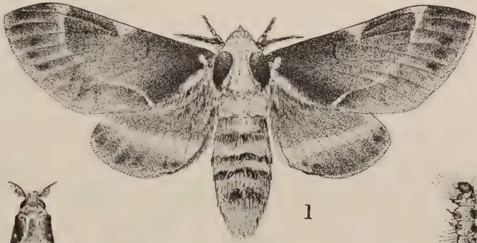
1
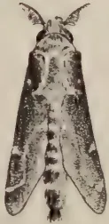
2
a
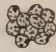
b
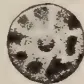
c
3
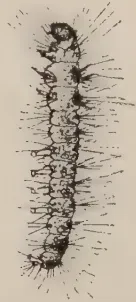
5
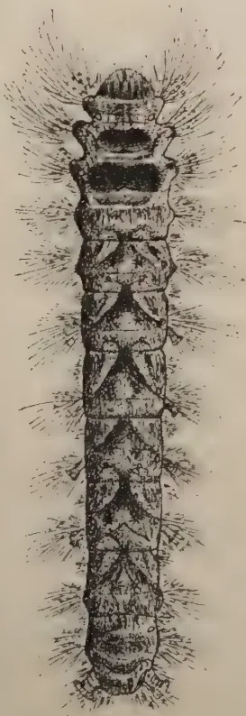
6
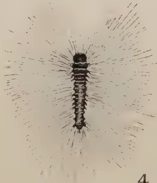
4
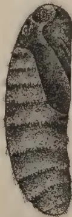
8
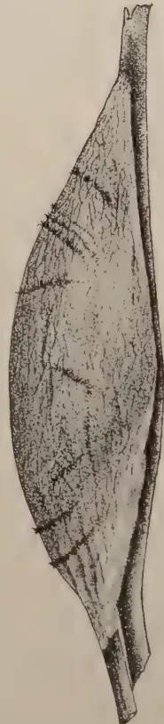
7
Block by Survey Dept. Ceylon.
George L. de Silva
Plate V.—THE VARIOUS STAGES OF TARAGAMA DORSALIS WLK.
32[JULY, 1925.found necessary to lop the whole area of dadaps and burn all the loppings together with all possible specimens of the pest. A " wilt " disease developed among the larvae during the height of the outbreak and probably assisted in the subsequent control of the pest.
Under laboratory conditions the complete life cycle of Taragama from egg to egg occupies from about 9 to about weeks, but field observations indicate that under natural conditions the life cycle is probably about 8 to 9 weeks. The favourite food plants seem to be dadap and albizzia, but the older caterpillars, at any rate, will also feed on the leaves of tea, rubber, and cacao to some extent. This pest has been known in Ceylon for many years and about a dozen outbreaks have been reported during the last twenty-four years from various districts.
Taragama dorsalis, Wilk.
The following extract is taken from the Entomological Notes by C. L. Withycombe, Ph.D., D.I.C., appearing in Tropical Agriculture, Vol. II, No. 5 :
Fumigation with carbon bisulphide has always been open to the serious objection that the heavy vapour of this liquid is highly inflammable and explosive when mixed with air. Roark, Back, Cotton and others have lately experimented with a large number of compounds and mixtures in an endeavour to find a satisfactory substitute. They now claim that a mixture of ethyl acetate and carbon tetrachloride is quite effective against the usual insects infecting stored foods ; it is non-inflammable, leaves no odour or taste in the fumigated materials (including bread), is not poisonous to man and can be obtained at a reasonable price. Its great advantage of course lies in the fact that it can be employed under conditions where danger of fire or explosion would preclude the use of carbon bisulphide.
Dingler, advocates hexachlorethane () as an effective solid fumigant against clothes moths. Two or three pounds of this substance are required per cubic yard of storage space. The adult moths are stated to be thus killed in twenty-four hours, eggs in four days, and larvae, which cease feeding in two days, die in from ten to twelve days. No damage is done to fabric either in light or darkness.
JULY, 1925.]33T. E. BAYNE-JARDINE.
Inspector, Ministry of Agriculture, Egypt.
The question of obtaining the best quality of cotton seed for sowing purposes is now becoming of much more interest to Egyptian cultivators than in former years, but unfortunately there is not at the present time nearly enough first-class seed to satisfy requirements. Few things are of greater importance than good seed and yet up to date little attention has been paid to its selection and purchase. The expenses of cultivation and management of a crop are the same, whether bad or good seed is used, but the difference in the original cost is small when compared with the difference in the final crop. A good maxim to go in for is "the best is never too good." In most countries of the world for years past the importance of only using the best seed available has been realized, and up-to-date farmers would no more think of using a doubtful or impure strain of seed than they would of using a badly bred sire in their flocks or herds. No one can deny the advantage of good breeding. It is only the well selected carefully bred racehorse that wins a race, and as in animals, so in plants, blood tells. Not to select seed with care and according to some definite plan, therefore, is wasteful, costly, and unprofitable. The greater part of this work of selection has been done at private enterprise, many firms having devoted much time and money to building up the best strains of seeds of farm and garden crops. In Egypt until recently practically nothing has been done in the selection of seeds by either public or private effort. Here one may state that Egypt is practically a one-crop country and that this one crop is cotton, especially if considered from a financial point of view, as the whole wealth of modern Egypt is almost entirely derived from cotton. Some of the larger cultivators have been in the habit of reserving a part of the seed from the first picking of their crop for the following years' sowing, and some Europeans have devoted time and money to evolving new strains. Through carelessness and lack of interest, however, all the strains of cotton in Egypt have been allowed to degenerate, and many of them have disappeared. This has given rise to an opinion that a variety of cotton in Egypt must of necessity deteriorate and that it is essential to evolve new strains after a more or less short period of years. Research has shown that this is not the case, and that a variety of cotton, as Sakellarides, can be kept pure and sufficiently virile to produce as good yields as it has ever done. The reasons for degeneration are simple; hybridization in the fields owing to growing varieties close together, mixing by cultivators to get rid of a variety of cotton, which has not a ready
34[JULY, 1925]sale, mixing in ginneries, intentional, in case where crops of different grades are mixed together, to produce a staple of a standard grade or unintentional due to mixing in conveyors, sacks, etc., and lastly the deliberate sale of taqawi from low quality crops at a price which appears cheap to the small cultivator, but is ruinous to him in the long run. Generally, however, cultivators have depended on the ginneries to supply them with seed taken from the first pickings, but no guarantee has ever been given, whilst the fellahin were quite satisfied with any seed provided it was cheap and germinated. In 1912 the State Domains commenced selecting their cotton seed, the surplus of which they placed at the disposal of the Ministry of Agriculture for distribution. This scheme has been most successful, in practically every case growers having found the value of their crop enhanced, and the demand for Domains' seed has increased to such an extent that this season the Ministry was only able to supply one-third of the quantity applied for. During the last few years, owing to the uncertain state of the cotton market, many large growers, purchasers of Domains' seed, did not gin till so late in the season that the Ministry was unable to secure the resultant seed which is known as Domains Second Generation, much of it being sent to be crushed, causing a serious loss to the country. Further, owing to the present low prices, many cultivators, with a view to economy fail to take an early picking with the natural result that the quality of the taqawi has fallen, and it is more difficult to get first-class samples of cotton seed now than it ever was.
The problem is from what source are cultivators to obtain the best possible, as it is obvious that the State Domains and the Ministry of Agriculture seed farms cannot possibly supply sufficient to meet the demand. To fill the gap a certain amount of sacrifice will have to be made by large cultivators and also by the ginneries. The former will have to procure the best seed available and must make up their minds to taking a first early picking, although it may yield only from half to one qantar per feddan. The latter will have to make arrangements to gin such lots of cotton, even though they be small, separately, and take the most scrupulous care by thoroughly cleaning their gins, conveyors, seed treating machines, etc., to avoid any risk of admixture by other or inferior seed. The writer, in the course of buying about 18,000 ardebs of seed annually for general distribution to small cultivators for the last three years, has examined many hundreds of samples. As the demand is almost entirely for Sakellarides, the samples examined have practically all been of that variety. It is found that a sample of Sakellarides is composed of :—
The seeds in (1) are not of much consequence as the majority of them are too damaged to germinate. Their presence in large numbers, however, points to a heavy boll-worm infestation or a late maturing crop from which it would not be advisable to reserve seed for sowing. In the samples
JULY, 1925.]35examined this percentage has varied from 5 to 20 per cent. or over, but all samples containing more than 15 per cent. have always been rejected, on the grounds that the purchaser is paying for sowing seed and not for rubbish which is valueless. As time has not allowed for very exact investigations, Sections (2), (3) and (4) have been considered together.
From these groups the Sakellarides taqawi suitable for sowing is obtained. Section (5) contains the seed which constitutes the danger to the purity of the variety and leads to the degeneration of the type. Such seed is naked or practically naked, generally rather dark in colour and often has a spike on the end. Observers have found that the lint from such seed is not like Sakellarides lint at all but is irregular in length, weak in strength and wrong in colour. The larger the amount of such seed existing in a sample of taqawi, the poorer in general quality will the resultant crop be. The elimination of this seed from taqawi should lead to an immediate grading up of the quality of the crop. This has been proved in a case known to the writer, where a firm of ginners hand-picked a quantity of their best taqawi, removing all seeds falling in class (5) which was sold to selected clients. On purchasing the resultant crops the following season a distinct improvement was found in the grade of the cotton. The amount of this "off type" seed varies very much. In the Domains X nucleus stock only two or three per cent. is to be found, in a sample of Domains seed as supplied by the Ministry to cultivators from six to twelve per cent. have been found, while at the other end of the scale or in a sample taken from taqawi offered for sale by a small merchant in this province which was examined 35 per cent. off type seed was counted. In a sample recently examined of taqawi from a well known crop of cotton which had been graded Good but with a rather low ginning out-turn, the amount of off type seed was found to be over 30 per cent. apparently due to some other cotton, perhaps Fat'hy, having been mixed with it. As a general rule, however, in average good samples submitted by reputable ginners, the amount of this off type seed varies from 12 to 25 per cent. with an average of 15 to 18 per cent. In dealing with taqawi lots the rule has been not to accept samples counting more than 20 per cent. of such seed and this season the standard has been reduced to 16 per cent. Even at the figure of 20 per cent. it means that one-fifth of the seed sown is not going to produce plants of a Sakellarides type. At the present time the difficulty of procuring good taqawi is increased by the custom of agents buying up crops from a district or village approximating to a certain grade and ginning them together. This mixture may be of sufficiently good a grade to warrant the taqawi being kept, but the admixture of seed in such a sample must be very great. Further, growers have a bad habit of cultivating a small area of other varieties, and if the price of the latter is lower than that of Sakellarides they mix the two crops together with the hope of getting the same price for all. Such a habit is a most pernicious one, and absolutely detrimental to all efforts to improve the quality of any variety. In order to get first class taqawi it is necessary that all such practices should be stopped. Seed for sowing should only be from one crop. Provided the original seed was absolutely pure the necessity of only taking the resultant
36[JULY, 1925.seed from the first picking is not of primary importance, though owing to ravages of boll-worm, and poor ripening due to lateness, seed from second pickings would probably not germinate so well. In order to obtain a good strain of taqawi a large land-owner, by proceeding on the following lines, should, by a small initial outlay, obtain what he wanted, and benefit his pocket very considerably in a few years. He would require to obtain for his year's crop the best taqawi he could get in ample time before sowing. The taqawi would be spread out and hand-picked, all seeds that were naked or distinctly off type being removed. On a large estate it would probably not be possible to pick over the whole quantity, but an effort would have to be made to do as much as possible. The work can easily be done by boys and girls after a little training and with some supervision at a comparatively small cost. A sample of the seed after it has been picked over should be tested for germination capacity as it might be possible, with a high germination percentage, to reduce the amount of seed sown per feddan, and thus make the hand-picked quantity sow a larger area. The Ministry of Agriculture are prepared to test samples of taqawi for germination capacity free of charge for cultivators. This selected taqawi should be sown on a soil offering conditions similar to those of the rest of the cotton area, and this seed plot should be particularly well prepared and cultivated. During the growing period the crop should be regularly inspected and any plants that are obviously not true to the common type should be pulled out. Plants under this category might be extra tall or very short, very coarse and leafy carrying few bolls, different shaped leaves and different coloured flowers. At the time of ripening as soon as it was possible to pick about one qantar per feddan, the grower would take his first picking. The pickers would be instructed to only take the fully open bolls, and in this way a quantity of absolutely first-class cotton would be obtained. An arrangement would have to be reached with the ginners, who would gin this cotton separately, independent of the amount, and the grower would receive his seed back. Great care must be taken during ginning, that no admixture with other seed takes place. The same process could be gone through for another year or two of hand-picking the selected strain, and by that time the grower should have a sufficiently large stock to sow his whole area. In the event of his wishing a change of seed a cultivator would require to find another working on the same lines when it would be a simple matter to arrange an exchange. After two years the taqawi should only contain a comparatively small amount of off type seeds which could be easily picked out. A point of primary importance, however is the early picking, which must be strongly insisted on if satisfactory results are to be obtained. In ginning also care should be taken to have the seed well aspirated, for though the primary object of aspiration is to remove dirt, dust, pieces of husk, etc., with a view to improving the appearance of the sample, still with modern aspiration most of the small immature seeds which would produce weakly plants are also removed. It must not be thought that selection of seed on the above lines with a view of getting increased purity, and other lint, is a slow process with no obvious results for many years. Its practice will show satisfactory gains even the first year, and in a country like Egypt where cheap labour is so abundant, the cost of quickly picking out off type seed would add very little to the cost per ardeb. The extra cost of the early picking would be small and would in reality only be a return to an earlier practice, and it would be to the advantage of the better class ginneries to make arrangements to be able to deal with cotton in small quantities for the production of taqawi of the first class. With a general introduction of the above scheme throughout Egypt there would be a good deal less heard about the deterioration of the cotton yield.—The Agricultural Journal of Egypt, New Annual Series, 1923.
JULY, 1925.]37The following extract is taken from the Journal of the Ministry of Agriculture, Vol. XXXII, No. 2.
In opening the conference the Minister of Agriculture (the Rt. Hon. E. F. L. Wood, M. P.), referred to the distinguished men such as Lord Ernle, Sir Daniel Hall, Mr. F. D. Acland—whom Balliol College had contributed to the agricultural world. He pointed to the increasing importance of Oxford University as a centre of agricultural education and research, possessing as it did, not only the teaching centre at the School of Rural Economy, presided over by Professor W. Somerville, but also the Research Institute in Agricultural Economics, directed by Mr. C. S. Orwin, and that in the Agricultural Engineering, directed by Dr. B. J. Owen. He thought it was true to say that the economics of agriculture which had hitherto been the Cinderella of agricultural investigation were at last attaining to their rightful place in research, advisory and educational schemes. He hoped the conference would become a periodic event and an integral part of the organisation of educational and advisory work. Research, advisory and educational work in agriculture was very fortunate in one respect—it enjoyed the support of all political parties. It was noticeable that whenever agriculture had been subject to review—as had very frequently been the case in recent times—the importance of education and research had always formed one of the principal recommendations made. That was a great source of strength.
It was sometimes asked why the Ministry did not make County Authorities move more quickly in agricultural education. Those who put this question forgot that while the Ministry had a great share in the organisation by providing the sinews of finance, the work depended for its success on an effective spirit of partnership between the Ministry and the County Councils; and if the principle of local autonomy were superseded the ultimate interests of agricultural education would not be promoted.
It was, further, not always realised how very new the research and educational system was. It was really only a six years old child, since although the outlines of the system and, in some cases, rather more than outlines, existed previous to 1914, nevertheless organisation as we now see it was in the main the work of the post-war period. In the last completed year previous to the war, the total amount spent by the Ministry on the maintenance of agricultural research was £32,000; this had now risen to £260,000, and the total expenditure by the State on agricultural education and research in the present financial year was estimated at approximately £650,000. This figure was not quoted on the theory that efficiency and improvement were synonymous with expenditure; on the other hand, it could not always be compared favourably with the expenditure of other
38[JULY, 1925.countries in this direction. But it did show that since the war Government had given much assistance to the development of agricultural education and research : and considerable progress had been made.
The whole of this system rested on the county agricultural organiser as the foundation. He had first of all the function of teaching the sons and daughters of agriculturists, and next, what was perhaps more difficult, that of advising and educating the adult farmers on methods of improving their farming practice. He (the Minister) had always felt that there was something of a gap between the research and scientific work that was going on and the ordinary working farmer. In considering methods of bridging this gap, he thought that not much could be learnt by reading ; more could be learnt by hearing ; and nearly everybody could learn by seeing. The practice of sending the farmer leaflets and literature was good in its way, but was not so effective as arranging lectures or discussion societies ; and the best practice was that of demonstrations. He was quite sure that much would be achieved by this last method.
The Minister concluded by expressing the hope that as a result of the bringing together in such conferences of a great variety of thought, ideas and experience, agricultural organisers, advisory officers, research workers and others would be led to feel that they were partners working together in a common business to which all would be enabled to make a contribution of increasing value.
The conference was an undoubted success ; among the many results it is only possible to refer here to two. In the first place it was made abundantly clear that yield figures obtained from trials in which no provision was made for adequate replication of plots could not be expected to give a fully reliable measure of the value of any given treatment, owing to the extent of the experimental error involved ; that such trials were nevertheless of value for demonstrational purposes when the known value of the treatment was so great as to be many times larger than the experimental error, or when the object of the work was to bring out points other than yield—e.g., difference in plant characteristics ; that for reliable results to be obtained from field experiments replication and “careful randomisation” of plots is necessary ; and that results cannot be regarded as significant unless the differences in yield of plots under treatment from control plots are at least three times the probable error.
In the second place the value of the conference in bringing together the general practitioners of agriculture—the agricultural organisers—and the specialists—the advisory officers, was amply demonstrated. Each class of officers was assisted to realise the kind of problem to be solved, and work to be carried out, by the other class of officers ; to realise also the fact that for the complete success of the Scheme of advisory work among farmers the closest and most cordial relations between the two classes of officers are necessary. The conference seemed to show that there was every ground for believing that in almost all cases friendly relations have already been established, which cannot but be cemented by meetings of this character.
JULY, 1925.]39For the Months of May and June, 1925.
The old dadaps in plot 144 were uprooted as the new trees planted in 1921 were ready to take their place.
Lack of rain has held up supplying operations. The superiority of Gliricidia over Dadap in weight of green material afforded in the -acre tea plot is still maintained.
The trees have flowered profusely and crop prospects are good.
The Jackson's Hybrid coffee bushes are bearing a heavy crop in favourable parts of the field where the growth has been good.
Kent's Arabica is not so promising.
The area under Indigofera endecaphylla has been extended, but dry weather has resulted in the death of a good many cuttings.
A further area of Crotalaria anagyroides has been sown for seed production; the seed has germinated well.
A further failure has been experienced in establishing Vigna oligosperma from cuttings for which lack of rain cannot be held entirely responsible.
Indigofera endecaphylla is at Peradeniya a far more satisfactory cover plant than Vigna oligosperma and has the additional advantage that it does not twine round the trees or bushes of the main crop.
Cuttings of Teramnus tabialis, another leguminous creeping cover plant, were received from Mr. H. A. Webb of Hindugalla Estate and planted out for trial.
Napier grass, Pennisetum typhoidenum, has come on very well. The yield from an acre plot is, for the last 10 months, practically identical with the neighbouring acre of Guinea grass.
A plot of Efwatakala grass, Melius minutiflora, was cut and fresh trials made in feeding the grass to cattle. The grass has a pungent smell discernable from a considerable distance and cattle had previously shown no liking for it.
On this occasion it was found that the native cows ate up the grass when given no other, but the Indian draught bulls refused to touch it at all. The grass is very similar in habit to Water grass.
40[JULY, 1925."Buffalo grass" (Setaria Sulcata) and "Native Paspalum," (Paspalum crobiculatum,) two grasses of which seed was obtained from Southern Rhodesia, have been planted out for multiplication. Both are promising grasses
Six varieties of Adlay were sown in the Annual Economic area: five varieties are doing well, the sixth has failed.
Pine-apples are planted in plot 20 in two methods. (1) Double rows with the plants ft. by ft. in the rows. (2) 3 ft. by 3 ft. After a spell of dry weather the closely planted plants showed considerably more signs of suffering from lack of moisture than those planted 3 ft. by 3 ft.
The Mycologist inspected all Citrus trees and found the following diseases in evidence:—
Oideum tingitaninum (Orange mildew).
Pseudomonas citri (Citrus canker).
Corticium salmonicolor (Pink disease).
The majority of the male labour force has again been employed in forking out couch grass and iluk: good progress was made till the hardness of the ground necessitated a temporary stoppage of the work.
T. H. HOLLAND,
Manager, Experiment Station,
Peradeniya.
Minutes of a Meeting of the Food Products Committee of the Board of Agriculture held in the Legislative Council Chamber at 11.45 a.m. on Wednesday, April 22nd, 1925.
Present: The Hon. Mr. F. A. Stockdale, Director of Agriculture (Chairman); the Government Economic Botanist; the Divisional Agricultural Officer, Southern Division; the Divisional Agricultural Officer, Northern Division; the Acting Divisional Agricultural Officer, Central Division; the Hon. Mr. D. S. Senanayaka, Messrs. C. Driberg, H. L. De Mel, C.B.E., L. A. Dassanayaka, Gate Mudaliyar; A. E. Rajapaksa, Gate Mudaliyar; Harry Jayawardena, Gate Mudaliyar; G. Gunatilake, Atapattu Mudaliyar; W. A. Amarasekera, Mudaliyar; S. Muttutamby, Adikar; C. W. Bibile, Ratemahatmaya; and Mr. N. Wickramaratne (Secretary).
Visitors: The Hon. Col. E. J. Hayward, the Hon. Mr. E. R. Tambimuttu, the Hon. Mr. C. W. W. Kannangara, the Hon. Mr. M. M. Subramaniam, the Hon. Mr. A. Mahadeva, Mr. G. V. Wickramasekera, Assistant to Economic Botanist; Mr. J. C. Driberg and Muhandiram Peter Weerasekera.
Letters and telegrams were received from the Hon. Messrs. James Peiris, N. J. Martin, D. B. Jayatilaka, A. Canagaratnam, D. H. Kotalawala, G. E. Madawala, Mr. N. D. S. Silva, Mr. M. S. Ramalingam, Gate Mudaliyar and Mr. E. F. Edirisinha, Mudaliyar, regretting their absence.
JULY, 1925.]41Minutes of the meeting held on January 15th, 1925, which had been printed and circulated to members, were confirmed. Before proceeding with the business on the Agenda of the meeting, the Chairman said that he had issued invitations to members of the Legislative Council requesting those members who were interested in paddy cultivation to be present at that meeting and to hear the results of the work done by the Department in the production of pure lines of paddy. On behalf of the Food Products Committee of the Board of Agriculture he extended a welcome to them and said that he would welcome questions or suggestions with regard to the proposed programme of work which would be placed before the Committee for consideration. He called upon the Government Economic Botanist to give details of the results of his experiments in paddy selection and the Divisional Agricultural Officers of the Southern, Northern and the Central Divisions to give results of their trials with the selected seed supplied by the Economic Botanist.
Agenda Item 2—Discussion of the question of Extension of work of the Department of Agriculture in the testing and distribution of selected pure lines of Paddy.
Mr. R. O. Iliffe, Economic Botanist, outlined the work done during the last five years in the selection of pure lines of paddy.
Mr. F. Burnett, Divisional Agricultural Officer, Southern Division, Mr. G. Harbord, Divisional Agricultural Officer, Northern Division and Mr. G. E. J. Hulugalla, Acting Divisional Agricultural Officer, Central Division, made statements of work done with regard to the testing of pure line strains of paddy in their respective divisions.
Mr. Iliffe explained the work that had been done during the last five years in connection with the selection of pure line of paddy supplementary to the paper he had prepared, printed and issued to members and published in the "Tropical Agriculturist," Vol. LXIV, No. 3, March, 1925, under the heading, "Some results in Paddy Selection." He gave results of experiments of, some 37 varieties of short-term paddies, which had given an average of over 50 bushels per acre while the average for Ceylon was given as 15 to 20 bushels per acre. He explained the difficulties met with in the case of field trials and the attitude of the land-owners and cultivators towards the testing of these strains in different parts of the Island. He explained the importance of field trials, before releasing these strains to the cultivator, and the necessity of having paddy experiment stations at different parts of the country owned and conducted by the Department.
Mr. Burnett said that trials were conducted with 30 varieties of pure line paddy seed since 1922 in his division with the co-operation of reliable cultivators and they all proved failures except three varieties which gave a yield of 50, 55, 60 bushels per acre respectively. The failures were due to the variation of the age of paddy. Such variations resulted in the loss of the crop by the attacks of paddy fly and birds and consequent loss to the cultivator. He emphasised the need of district experiment stations to be conducted by the Department.
Mr. Harbord said that in his division trials of pure line strains had been restricted to the Experiment Stations of the Department. These trials had given satisfactory results. 12 strains of paddy grown at
42[JULY, 1925.Anuradhapura had given an average of 48 bushels per acre and two strains of paddy grown at Kinniya Experiment Station (at Trincomalie) were estimated to give a yield of over 50 bushels per acre.
Mr. Hulugalla said that several trials were made with several strains in the division by Agricultural Instructors with the co-operation of village cultivators who were at first reluctant to grow the varieties which were not known to them but agreed to do so on promise of compensation in the event of failure. The strain B12 which was named by the cultivators as "Peradeniya Hatial" gave satisfactory yields. A bushel of B12 has been found to weigh 48 lb. and an ear head had contained 256 grains on the average.
The Chairman said that they had listened to what had been explained to them by the Economic Botanist and the Divisional Agricultural Officers on the subject. No central station could produce seed suitable for all districts in Ceylon owing to varying factors such as climate, soil, etc. They required 16 district stations and it was proposed to lease out lands at an average of five acres at each station. This would involve an expenditure of Rs. 16,000/- to Rs. 20,000/-, and if they agreed to the proposed extension of paddy trials he might have to apply for a supplementary vote as the work must be begun in time to sow in September for the coming Maha crop. He called for suggestions and criticism.
A discussion followed, in which the following took part :—Gate Mudaliyar A. E. Rajapaksa, Mr. Muttutamby, Adikar, the Hon. Messrs. E. R. Tambimuttu and C. W. W. Kannangara, Col. E. J. Hayward, Mr. H. L. De Mel and the Chairman.
Gate Mudaliyar Rajapaksa offered to give 10 acres of paddy land in the Negombo district for the purpose and said that he would personally carry out the experiments and submit reports.
Mr. Muttutamby enquired whether these experiments would be carried on in the existing demonstration plot at Mannar or whether a new station would be established, and the Chairman explained that the Mannar station would consist of high and low portions. The latter would be used for paddy experiments.
The Hon. Mr. Tambimuttu thanked the Director of Agriculture for inviting the members of the Legislative Council to be present at that meeting and for the valuable information given to them on the subject. He said that he would support the scheme for establishing experiment stations in different parts of the country and would support the grant of the vote of Rs. 16,000—20,000/- asked for for such a useful purpose. He further said that he hoped that the Finance Committee of the Legislative Council would not grudge that vote asked for.
Mr. De Mel also thanked the Director of Agriculture for the information supplied and supported the proposed scheme. He said they were convinced that the experiments had been conducted on sound lines and urged the establishment of an experiment station in the North-Western Province which is a large paddy-producing province.
Col. Hayward thought that it would be desirable to consider the improvements of the soil in connection with these experiments.
JULY, 1925.]43Mr. Kannangara wished to know who would be the officers who would be appointed to be in charge of the stations and what labour would be employed in the work.
Mr. De Mel enquired whether these fields could be worked on the andé system.
The Chairman explained that the stations would be in charge of Agricultural Instructors and the labour that would be employed would be all local villagers and not imported labour. As regards Mr. De Mel's enquiry he said that the andé system would not do. In reply to Col. Hayward he said that the improvement of soil was one of the factors which would receive consideration.
The Chairman thanked Gate Mudaliyar Rajapaksa for his offer.
The following resolution was eventually put before the meeting and carried unanimously, viz. :—
" That this meeting is in favour of the establishment of district stations for testing, distributing, and the evolution of pure line strains of paddy."
At this stage the Chairman thanked the members of the Legislative Council for their support and the members left the Meeting.
The Chairman opened the discussion of " Further consideration of the question of standardization of the 'kuruni' measure and said that as decided at the last meeting of the committee he forwarded to Government the resolution on the standardization of the 'kuruni.' The Excise Commissioner had written to him stating that, as the capacity of the 'kuruni' varied in various districts, that it should be standardized as an equivalent to one-eighth of a bushel. As there was some difference of opinion on the subject, he (the Chairman) asked the members to express their views.
Some discussion followed, and Gate Mudaliyar Jayawardena, Mudaliyar Amarasekera, Mudaliyar Gunatilaka, Mr. De Mel, and Mr. Wickramaratne offered remarks.
The Chairman further stated that his enquiries indicated that the capacity of the 'kuruni' varied from 1/6 to 1/8 and even to 1/10 of a bushel in various parts of the country.
Mudaliyars Jayawardena and Amarasekera, spoke of the fraudulent uses of the kuruni by certain unscrupulous traders who measured paddy with a large 'kuruni' in purchasing and used a smaller one in selling paddy in Matara and Tangalle districts.
Mudaliyar Gunatilaka said that such use was not very frequent and was to a small extent.
Mr. De Mel said that he had not given much thought to the question but that he did not see the necessity for standardization of the 'kuruni' as a part of the bushel.
Mr. Wickramaratne was invited by the Chairman to give his views. He objected to making a Sinhalese measure the equivalent of an English measure. The kuruni measure was hardly in use as a commercial measure and had been in use for ages in the "kamatha" or thrashing floor for measuring paddy and for paying labour in kind. A change in the kuruni would
44[JULY, 1925.]put a large number of these vessels into disuse, and there would be some hardship to the village cultivator.
After further discussion the Chairman put the matter to the meeting, viz. that the kuruni be standardized as an equal to of a bushel. This was carried by seven votes. Two were against, and the others did not vote.
Agenda Item 4—The necessity for revival of policy of restoring Major Irrigation Schemes.
The Chairman explained that the motion submitted by Mudaliyar Muttutamby was one arising out of a similar motion moved at the last meeting of the Committee, and in connection with that he said that he had received the following communication from the Government Agent, Northern Province, viz. :—
“That although the recommendations of the Retrenchment Committee was that a five years’ halt should be called in the policy of the construction of large irrigation works, presumably from 1923, the decision of Government was that a policy not to engage on new major Irrigation Schemes be adopted, but no definite period was mentioned.”
However, he said that he would like the mover to speak on the subject so that they might see whether the mover could make out a good case.
Mudaliyar Muttutamby moved :—
“That it is necessary to revive the policy of restoring Major Irrigation Schemes wherever the population is stagnating, on account of the insufficiency and unreliability of the local rainfall, making paddy cultivation a precarious means of existence,” and spoke at length in support of the motion. He stressed two points that there should be abundant water-supply for paddy cultivation and that those parts subject to malaria should receive better facilities for cultivation.
Mudaliyar Gunatilake remarked that Mudaliyar Muttutamby should lay his grievances before the members of the Legislative Council as it was a matter in which the Committee could not help.
The Chairman put the motion to the meeting, which was lost.
N. WICKRAMARATNE,
Secretary, Food Products Committee.
Proceedings of the Fourth meeting of the District Agricultural Committee held at Matara on 12th May, 1925, at 10 a. m.
Attendance.—Mr. A. N. Strong, C. C. S., Assistant Government Agent, in the chair, and the following members: Messrs. F. Burnett, Divisional Agricultural Officer, G. Altendorff, J. E. Wijesinha, and Mudaliyars W. A. Amarasekera, S. W. Illangakoon, P. F. W. de Livera, W. A. Perera and W. A. Wijesinha, and Mr. B. Perera, Sub-Inspector, Plant Pests (Visitor).
Vote of Condolence.—Before proceedings commenced the Chairman said that he wished to propose a vote of condolence on the death of Mr. A. T.
JULY, 1925.]45Reeve, Inspector, Plant Pest Board, who had served this Committee for over two years and rendered valuable assistance. He had not the pleasure of knowing Mr. Reeve personally, but had heard of the valuable services rendered by him to the Committee.
Resolved to place on record the Committee's appreciation of the valuable services rendered by the deceased and the loss sustained by the Committee on his demise, and to express sympathy with the relatives of the late Mr. Reeve. The resolution was carried in silence.
Absent Members.—Read letters from Mr. C. B. Collisson and Mr. D. Samarawira regretting their inability to be present at the meeting.
Minutes.—Read and confirmed minutes of meeting held on 9th February, 1925.
(a) Reports from the Agricultural Instructors were tabled re above. They report that the Honorary Secretaries of the various Co-operative Societies are taking a keen interest in popularising these competitions. The Agricultural Instructors are assisting them by distributing seeds and personally visiting and instructing the laying out and preparation of beds for vegetables.
(b) The Chairman at this stage informed the meeting that in the course of conversation at Deniyaya the Hon. Mr. F. A. Obeyesekere offered 6 prizes of Rs. 50/- each for vegetable garden competitions in the Matara District. He considered that competitions were much more satisfactory than Agricultural Shows.
Resolved that the suggestion was an excellent one.
1. The Chairman further acquainted the meeting that he had written to the Mudaliyars of the District for their views on the subject.
2. Resolved that the replies with the Assistant Government Agent's recommendations be sent to the Divisional Agricultural Officer to draw out details for the competitions for final approval by Mr. Obeyesekere.
Encouraging the growing of Plantains.—Considered what steps should be taken to encourage the growing of plantains. (1) Resolved that the cultivation be classed under vegetable competitions and that a certain sum of money be allotted for the encouraging of the growing of plantains.
(2) Resolved that money prizes be awarded instead of Cups or Medals.
Working of Co-operative Societies in other Countries.—The Divisional Agricultural Officer spoke at length on the history of the working of the Co-operative Societies in other countries. The country specially chosen was Denmark.
Application of Co-operative Principles to present-day Industries.—Mr. Burnett, Divisional Agricultural Officer, described how the application of the Principles of some of these Societies may be adapted to the industries in Ceylon.
At the conclusion of his speech a discussion took place between the members as regards the working of the present Co-operative Societies and methods of popularising the movement and enlisting the sympathies of influential men in the place. A short resumé of the methods employed in other countries were explained the lectures being by Agricultural Co-operatives themselves.
46[JULY, 1925.Cultivation of Cotton in Hambantota.—Mr. Burnett then discussed the results of the first collection of Peasant Cotton Crop grown in Hambantota. He said that the organisation was briefly arranged for the collection. The centres being 1. Hambantota, 2. Ambalantota, 3. Hathagala, 4. Angunakolapelessa, 5. Talawa and 6. Meedeniya.
Cotton was brought to these centres by the cultivators and the price paid was based on the guarantee price of Rs. 25/- per cwt. Price paid in these centres varied according to the distance from the shipping centre (Hambantota).
The first crop resulted in a yield of over 1,000 cwt. of cotton and money paid out exceeded Rs. 25,000/-. The cotton was in excellent condition and of good quality.
A discussion followed as to whether cotton could be profitably grown from an estate point of view.
Mr. Burnett was of opinion that cotton growing on an estate basis would not be a profitable concern. It was a small owners' crop and gave reasons why he did not consider at present it could be successfully cultivated as an estate product.
Analysis of the Soil of Borala Citronella Station—A statement showing analysis of the soil of Borala Citronella garden was tabled by Mr. Burnett. The reason for the analysis he said was in accordance with the resolution of the previous meeting.
Citronella Yield at Borala.—Mudaliyar Illangakoon requested that the yields of the various plots be tabled at the next meeting. Mr. Burnett promised to do so.
Minutes of a meeting of the Food Production Committee, Trincomalie District, held at 9-30 a.m. on the 20th June, 1925 at the Trincomalie Kachcheri.
Present.—Mr. W. L. Murphy, Assistant Government Agent (Chairman), Mr. W. G. Vallipuram, Office Assistant (Secretary), the Hon. Mr. M. M. Subramaniam, M.L.C., and Messrs. O. T. Nettleton, District Engineer, Trincomalie, K. Somasundram, Kachcheri Mudaliyar and Town Vanniya, S. Namasivayam, Vanniya Koddiyar, A. Canagasingham, Vanniya Tamblegam, A. V. Chelvanayagam, Agricultural Instructor, and S. Thiyagarajah, Proctor, S. C. Trincomalie.
(1) Resolved that an Agricultural and Industrial Show be held in Trincomalie for the year 1926.
(2) Resolved that the Show be held some time in March, 1926, the date of which is to be fixed by the Sub-Committee appointed for the purpose, and that the site should be the Central Market.
(3) It was further unanimously resolved that the following gentlemen be appointed to form the Sub-Committee for framing any necessary rules, fixing prizes and making other arrangements in connection with the show, namely :—The Assistant Government Agent, Trincomalie, The Office Assistant, The Divisional Agricultural Officer, The Town Vanniya, Mr. S. Thiyagarajah, The Divisional Forest Officer, The District Engineer, The Hon. Mr. M. M. Subramaniam, and that the Sub-Committee meeting should be held during the latter part of July, 1925.
JULY, 1925.]47“To be prepared is
half the victory”
If you have a
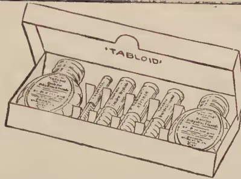
TRADE MARK 'TABLOID' BRAND EMERGENCY OUTFIT
for use in
You can deal with an attack immediately.
It is indispensable to those who live a
great distance from medical aid.
Price in Bombay, Rs. 6
All Chemists and Stores
BURROUGHS WELLCOME & CO.
LONDON
xx 4251
All Rights Reserved
A. VEDACHALAM.
At first the Madras Central Urban Bank was started with a view to attract deposits for financing co-operative organisations in rural parts which could not attract local capital for carrying on such transactions. The shares were thrown open to the public, and individual shareholders were allowed to take shares not exceeding the value of Rs. 1,000, and eventually this limit was extended to Rs. 5,000. Such shareholders were expected to work the bank for the benefits of the co-operative movement and for securing a fair value for their money, in the shape of dividend on share capital. This shape of things continued for some time when it was thought desirable to organise central banks in district centres so as to tap local deposits which would not come into the Madras Central Urban Bank. District Central Banks were started in Salem, Trichinopoly and Coimbatore. In these central banks, individuals took shares and conducted the transactions of deposit banking and had to be satisfied with a dividend of 9 per cent. on their capitals being the maximum provided for in the rules issued by the
48[JULY, 1925.local Government under Act II of 1912. These central banks were not different from commercial banks under Company Law except in regard to the fact that they are not to lend to individuals except to shareholders and that they are to finance co-operative organisations. The co-operative character of these institutions depended only on this fact that they catered for the benefit of the co-operators only. This arrangement drew into the central banks a large number of influential men in the districts whose support has led to the success of deposit banking owing to the confidence reposed in them for good and efficient management.
2. In 1912, the Committee on Co-operation tackled the question whether central financing societies should not be modelled so as to be an organisation composed of primary societies for which the required share capital should be contributed by the co-operators of primary societies. The Committee was of opinion that this ideal was not capable of realisation in the near future, but that the shares in central banks should be held by individuals and by primary societies.
The reasons adduced were that the representatives of societies should take a part in the management of the central banks so that they might be educated in the finance of the movement and that they might also assist the management with their first-hand knowledge of the working of primary societies and of the difficulties experienced by the primary societies. The individuals who are shareholders being persons of influence and with knowledge of business principles were expected to supply the brain power required to strengthen the management.
3. Since the Committee's report was issued, the central banks were asked not only to finance co-operative organisations but also to make arrangements for seeing that such primary societies discharged their duty efficiently. They were asked to see that their investments were safe by arranging for the supervision of the primary societies.
4. The central banks that were started subsequent to 1913 were all of the mixed type composed of individual and society shareholders and the by-laws of such central banks cast an obligation on them to undertake some supervisory functions or to arrange for supervision by local unions on payment of contribution to them in the shape of rebate of 4 as. for the interest realised on every loan of Rs. 100 to primary societies or a certain proportion of the profits.
5. As regards regular management, the representatives of local unions had each a seat on the directorate and individual shareholder representatives were equal in number or more or less than the society representatives as the by-laws provided. The Managing Board being unwieldy, a smaller executive manages the affairs of the bank in regard to matters which the Managing Board entrusts to them.
6. The Madras Central Bank which had only individual shareholders at the outset were induced to take in societies as shareholders just on the analogy of District Central Banks.
7. The society representatives had however no effective voice in the administration of the Madras Central Urban Bank and agitation was set on foot to bring the District Central Banks on the Board of Management
JULY, 1925.]49and to eliminate the primary societies from the membership of the Madras Central Urban Bank. The Madras Central Bank however demurred at first to this change but eventually the individual shareholders' gave in after guarantee of dividend at 9 per cent. and also of share capital was conceded to them besides granting a higher commercial value of Rs. 160 for every 100 Rupees of share capital invested to be redeemed out of profits. This arrangement was finally concluded in 1920 and redemption of individual shares commenced out of the profits and such vacated shares were replaced by the shares taken by District Central Banks. In 1924, each individual shareholder numbering in all 230 had a share valued at Rs. 160 and they are given fewer seats in the Directorate. Arrangements are in force to allow individual shareholders to give up their shares if they choose for which there is redemption fund and no compulsory elimination is to be enforced.
8. Subsequent to 1920, following the system adopted in the Madras Central Urban Bank, co-operators who take part in the management of Central Banks were persuaded to arrange for the elimination of individual shareholders or for making them play an insignificant part in the management. Such a scheme commenced in full force in the District of Vellore where the societies had a very large amount of share capital to be invested in the Central Bank. This Bank had however a special by-law according to which individual shareholders may be eliminated by the District Bank in 1932, when such shares can be bought up by the Bank at par. Being impatient to wait till 1932 and not satisfied with this provision, Co-operators wished to create difficulties to individual shareholders from continuing as shareholders in the District Bank. As a sort of working arrangement the District Bank accepted the procedure of elimination of individual shareholders at a premium of Rs. 10 per cent. above par and passed a resolution in the general body meeting to amend the by-law. The Registrar will not however accept this arrangement as he was of opinion that the elimination of individual shareholders was a little premature. At any rate he has chosen not to pass orders on the amendment proposed. The estrangement of feeling between the individual shareholders and the societies still continues.
9. In the District of Salem, co-operators wanted that the individual shareholders should be allowed to sit on the management after election by the entire general body instead of as at present by the panel of individual shareholders. This move has not yet been accepted by the individual shareholders or by the Registrar.
10. In the District of Trichinopoly the society representatives are few in number and the individual shareholders are predominant in the arrangement. As a result the feeling between the two sets of shareholders is not cordial.
11. In South Canara, co-operators wanted to evolve a scheme by which the elimination of individual shareholders can be secured gradually if similar feeling appears to be experienced in the District of Kistna.
12. Without discussing the reasonableness or otherwise of the wave that is passing among the co-operators and without caring to spot out the source of inspiration of such a wave, it is the duty of every one interested in the movement to have a clear grasp of the situation and devise a suitable arrangement in view of securing a healthy and efficient working of District Central Banks.
50[JULY, 1925.13. I wish to offer a few suggestions. (1) In case where District Central Banks want more share capital, they should throw open shares only to societies but where they could not get share capital from them as rapidly as they want, they may throw open such shares to individuals on condition that the bank has power to buy them at par at the end of a defined period, say 10 or 15 years. (2) In cases where District Central Banks have a large accumulation of share capital owned by their member societies and available for investment in District Bank shares, these banks can notify the fact to the shareholders who can surrender them if they choose at par to the extent notified. There does not seem to be any necessity to offer any premium on that account. Before the central banks notify such offer, the society representatives will have to consider the following:—
(1) whether they feel they can manage the District Bank without the help of individuals.
(2) whether they can evolve more intense working of the District Bank with the help of individual shareholders in the direction of giving long-term loans, financing of trade, industries and of giving extended credit facilities to rural co-operators.
(3) whether the representatives of societies can be expected to run the financial machinery at a cheaper cost and efficiently and whether the responsibility for running the bank will not gravitate to the expert staff entertained and without adequate control over such expert staff.
14. The co-operators have to feel themselves by careful introspection and decide on the buying up of shares and fix the amount to be set apart by them in each year for the redemption of individual shares. The individual shareholders should be willing to assist the co-operators where they want them and to withdraw in case they are not wanted. The individual shareholders have come into the movement to help the cause of co-operation and not merely for the sake of dividend. They are morally bound to withdraw when their services are not wanted. If the individual shareholders withdraw from the central banks, if and when desired by the co-operators, their energy and resources will become available for helping the cause of co-operation in regard to other activities than credit.
15. Persons interested in the co-operative movement have to consider how far the central banks can be confined to merely financing credit organisations of the limited character now being practised and whether the central banks should not be developed so as to be the one centre of finance in each District to set free credit accommodation for all kinds of co-operative activities. The elimination of individual shareholders is contingent on the decision of the question as to the scope of usefulness to which these central banks are to be fitted.
I therefore appeal to the co-operators connected with the primary societies to seriously consider this extended scope of financing co-operative organisations of various types and arrive at a satisfactory solution with reference to the peculiar circumstances of each District. The individual shareholders are also desired to throw no obstacles in the way of any scheme for the elimination of individual shares in part or in whole if and when the representative of societies do not want them and to gladly
JULY, 1925.]51continue to render assistance in whatever way the co-operators may want. I would advise the individual shareholders to give up seats on the Executive Committee or even the Board of Management if the co-operators wish to undertake the work themselves. The individual shareholders will be in the general body and watch the working of the institution. If the individual shareholders will honestly and practically assume this attitude, it seems that the co-operators will realise their responsibility and bestow their best thought in deciding on the manner and the period when the individual shareholders should be eliminated and replaced entirely by society shareholders.
16. In this connection I may advisedly quote the opinion of Sir P. Rajagopalachariar given in his address to co-operators of the Chingleput District while unveiling the portrait of Mr. M. Audinarayana Ayyah on 25th March, 1925, in the Conjeeveram District Bank.
"The Madras Central Urban Bank which had been started almost at the initiation of the movement and which had done much for financing it felt that its interests would be prejudicially affected by the starting of another financing bank so near Madras. Here again Mr. Audinarayana Ayyah's wonderful grasp of first principles served him and the movement in good stead; and I know that his advice and guidance were found invaluable by the then Registrar, Mr. Swamikannu Pillai. He insisted on the chief financing bank of the district being constituted by society units and it was with some difficulty that he was persuaded to relent so far as to allow a small proportion of individual shareholders. It must be a source of sorrow to his many friends that he was not spared to see the fruition of his work. He died within a year of the organisation of the Conjeeveram Central Bank. This bank which he helped so largely to place on sound lines has developed with rapidity as so many matters co-operative have done. It has now over 500 societies as members with a working capital of over 26 lakhs of rupees and a reserve fund Rs. 35,100. The individual members play a minor, but a very necessary, part in the working of the bank; and if an old co-operator like myself could give a piece of advice to the thousands of societies all over the Province it is this: Do not be in too great a hurry to eliminate the individual shareholders of the District Central Banks; the time will come when these banks will be composed wholly of society members; but that is yet far off and any attempt to force the pace would jeopardise the movement by depriving it of valuable human material essential for working it. This is the one aspect of the co-operative movement which I would emphasize that, while steadily keeping in view correct ideals, and striving as far as possible to attain them, co-operators should temper the application of those ideals by a candid recognition of the day-to-day needs of the movement."
17. In conclusion I would also appeal to the officers of the Co-operative Department to view the question as above indicated and not to throw the apple of discord between the individual shareholders and the society shareholders as such a course is fomenting disunion between the two sets of co-operators and as it is sure to lead to a set-back in the progress of the movement.—The Madras Bulletin of Co-operation, Vol. XVI, No. 10,
52[JULY, 1925.GEORGE M. REED.
The cereals, as wheat, rice, corn, and rye constitute the basic food of most of the world's human population. Although sorghum occupies a minor place among these crops, yet for centuries it has been a staple food plant of certain sections of the Old World. The inhabitants of the Bombay and Madras Presidencies of India, of Northern China, Manchuria and Chosen, of Western Asia (including Syria, Turkest'an and Mesopotamia), and of parts of Africa have depended largely upon this cereal for human, as well as animal, sustenance.
Northern China and Manchuria.—Quite diverse kinds of sorghum are grown in the different regions of the world. In Northern China and Manchuria a special group, the kaoliang, is extensively cultivated. The number of varieties is very great, so that it is possible to find in a single field thirty or forty different kinds which differ in height, time of maturing, colour of seed, and other characters. The grain constitutes the main food of the people, the light coloured varieties being the principal ones used for grinding into flour and making cakes. The varieties with dark coloured grains are less desirable for human food and are used as feed for the farm animals, taking the place held in other countries by oats. The grain is also used for distilling the fiery spirit called "Samshu" so common in North China. The heads, after the removal of the seed, are utilized either for fuel or for the manufacture of brooms—some varieties being better adapted for the latter purpose than others. Also the stalks are used for fuel, for making baskets and mats, for building houses and fences and as poles for beans, cucumbers and yams. Even the roots are dug up and used for fuel.
India.—Sorghum, or jowar, as it is commonly called, ranks third among the cultivated crops of India: approximately 25 million acres are grown annually. The crop is first in importance in the Bombay Presidency, where more than one-third of the total area (approximately 8 million acres) devoted to the cultivation of grains is sown to sorghum. Two distinct types of sorghum crops are grown here: the summer crop, or Kharif jowar, sown in the spring and harvested in the fall; and the Rabi crop, or winter jowar sown in September or October and harvested in the following February or March. Different varieties are utilized in the plantings of Kharif and Rabi jowar. Throughout India, the grain of the sorghums is used very largely for human consumption, and the number of varieties grown is very large.
Africa.—Sorghums are widely distributed in Africa and are the staple cereal crop of a large proportion of the native population. The grain is
* This Leaflet has been prepared to accompany an educational exhibit of the types of sorghum, prepared by the Brooklyn Botanic Gardens for the High Schools.
JULY, 1925.]53used for human food and for the manufacture of fermented drink. Certain types are extensively cultivated in Egypt and in the Barbary States of Northern Africa. In South Africa quite different varieties usually spoken of as kafir corn, are found.
Europe.—Broom corn has been cultivated in Italy for about 300 years, and to-day is an important agricultural product in Italy and Hungary. With the exception of broom corn, sorghums have not been extensively grown in Europe, although in the Mediterranean countries some varieties are grown, the seed being used for poultry and stock feed. To a minor extent the grain is also used by the poorer classes in making bread.
West Indies.—The Sorghums were introduced early into the West Indies from Africa. In Jamaica a variety known as "Guinea corn" is grown rather extensively. In Haiti several closely related varieties are grown under the general name of "Petit Mil." The grain is extensively used for human food, as well as for feed for animals.
United States.—Broom corn was apparently the first sorghum to be introduced into the United States, which occurred as early as 1798. During the early part of the last century it was grown more or less widely over the eastern part of the country, but in recent years its production has proceeded westward, and at the present time most of the crop is grown in Illinois, Oklahoma, and adjacent states. Some varieties of sorghum yield a sweet sap which is extracted and made into syrup, and these, the saccharine sorghums, or Sorgos, were first introduced into the United States in 1853. At that time a Chinese sorgo, of the Black Amber type, was introduced from France. In 1857, Mr. Leonard Wray, an English planter who had collected a number of saccharine sorghums in South Africa, introduced his varieties into this country. Previous to 1880, several types of grain sorghums were also introduced. In 1876, two varieties of kafir were exhibited by the Orange River Colony at the Centennial Exposition in Philadelphia. About the same time varieties of durra were introduced from Northern Africa. A number of kaoliangs were also brought in from China and Manchuria. In the early part of the twentieth century Feterita and Sudan grass were introduced from Sudan. Some additional varieties of kaoliang were brought in from North-eastern Asia, as well as additional varieties of kafir from South Africa.
The sorghums at the present time have a very great value in American agriculture. The grain sorghums are well adapted to the southern Great Plains area, including Western Kansas, Western Oklahoma, North-western Texas, Eastern Colorado and Eastern New Mexico. In this general region they have shown themselves a much more reliable crop than corn. It is an interesting fact that, with the exception of broom corn and the Black Amber types of sorgo, nearly all of our valuable sorghums have been introduced from Africa. The sorghums of India and the kaoliangs from Northern China and Manchuria have not proved to be particularly well adapted to our climatic conditions.
All the sorghums are regarded as belonging to a single species of the grass family—Holcus sorghum L. (Andropogon sorghum (L) Brot.). The
54[JULY, 1925]wild forms of the species, which are closely related to Sudan grass, Tuni grass, etc., are widely distributed in Central and South Africa, Egypt, Madagascar and neighbouring islands. These are annual plants without root-stocks and are differentiated into a number of distinct races or sub-species. Forms of these grass sorghums growing wild in Africa are nearly as large and coarse as some of the cultivated types, with which they readily hybridize.
The number of cultivated varieties of sorghums which are grown in the various parts of the world is extremely large. A relatively small number of these have been introduced into the United States, and as already noted most of the useful ones have been brought in from Africa. It is difficult when the varieties from all parts of the world are taken into account to adequately classify them, as the dividing lines between the different groups are very indefinite. They appear to hybridize with one another very readily so that new forms are constantly originating.
In general appearance the sorghums somewhat resemble corn or maize. The flowers, however, are perfect and the grain is borne in compact or loose panicles at the upper end of the stalk. The flowers appear to be generally self-pollinated, but cross pollination occurs so frequently that hybrids are constantly arising when two or more varieties are grown adjacent to each other. The sorghums are grown as a tillage crop and planted and cultivated in the same general manner as corn.
The sorghums grown in the United States may be grouped into four agronomic classes:—
Our modern broom corn has probably been derived from some sorghum with a loose open head and is grown primarily for the "brush," which consists of the panicle or branching inflorescence used in the manufacture of brooms. The stems and leaves have some value as stover or fodder for stock. The panicle varies from 15 to 24 inches in length and is umbelliform, with greatly elongated branches and drooping tips. The rachis or main axis is usually less than one-fifth the length of the panicle. The grains are reddish in colour and included within the glumes.
There are at least three distinct varieties of broom corn grown in the United States. These differ mainly in the height of the plant, in the tenacity of the attachment of the peduncle to the upper node of the
JULY, 1925.]55stem and the length and texture of the brush. Standard broom corn has been grown for many years. In Western Oklahoma it grows to a height of 8 to 10 feet but under more favourable moisture conditions it reaches a height of 12 to 15 feet. The other varieties of broom corn are much shorter, ranging from 3.5 to 6 feet in height. At the present time dwarf broom corn composes about two-thirds of the total crop in this country, as it is especially well adapted to the climatic conditions of Oklahoma and adjacent regions.
Broom corn is grown in the same general fashion as corn and requires similar methods of tillage. The brush is harvested just after the flowering period and as late as the milk stage of development of the kernel. During this period the natural green colour is developed throughout the branches of the panicle and, if properly cured, the brush is flexible and of the best quality. Immediately after harvesting, the broom corn is threshed by means of a special machine which removes the kernels. It is then usually placed in a specially-built drying shed where it is allowed to cure. After curing it is crated and baled for the market. The weather conditions during the harvesting period and the care taken in harvesting, threshing, curing, crating and baling are very important factors in determining the value of the final product.
The total acreage devoted to broom corn varies greatly from year to year. In 1923 approximately 500,000,000 acres were grown, over half of the acreage being in Oklahoma. The average yield in 1923 was about 278 pounds of brush per acre, and this had an average farm price of about $160 per ton, or about $22 per acre.
There are several varieties of sorghums which have considerable value as grass or hay crops. The most important one is Sudan grass, which was first introduced into the United States in 1909, the grain being received from Director R. Hewison. Department of Agriculture and Lands, Sudan Government, Khartum, Sudan. Some later introductions have also been made, but practically all of the Sudan grass grown in the United States has come from the first importation. In 1918 the value of this crop was estimated at $10,500,000. Sudan grass is an annual, which grows rapidly and produces stems 4 to 6 feet high. It has proved to be a very desirable forage plant in the southern part of the United States and can be successfully grown as far north as Michigan and New York.
The first variety of sorgo, or sweet sorghum, was introduced into the United States from China by way of France. In 1851, some grain was sent to France from the Island of Tsung Ming, but only one grain grew. The resulting plant had a tall slender stem and bore a loose panicle with more or less drooping branches and light brown seeds enveloped by black shiny glumes. Some grain was introduced into the United States in 1853 and, since many of our present forms of Black Amber sorgo show these same characters, it is probable that most of them have originated from this Chinese variety.
56[JULY, 1925.However, the majority of our sorgos have come from South Africa. Mr. Leonard Wray, an English sugar planter at Natal, South Africa, procured sixteen varieties which were grown by the various native tribes and called by them "Imphee." Wray brought these varieties to Europe about 1854 and arranged to have them grown in various countries. Fifteen of them were introduced into the United States and in 1857 were grown in Georgia and South Carolina. The original introductions were soon widely distributed over the United States. They hybridized readily and selections were made which resulted in a multiplication of so-called varieties. A large number of names has been recorded for the different sorgos, but the number of really distinct varieties is not very large.
Our American sorgos may conveniently be classed in five groups :
1. Black Amber sorgo. This group includes the various varieties of strains developed from the original Chinese importation. For the most part they are early maturing and are characterized by rather slender stems, narrow leaves, and panicles black in general colour, due to the black shiny glumes which almost conceal the reddish yellow grains.
2. Orange sorgo. This group can be traced to one of the original Wray introductions from South Africa. The varieties have larger and thicker stems and more abundant leaves than the Black Amber group. The panicles are much heavier and more compact. The glumes are deep red or black at maturity, the reddish yellow seeds projecting between them and giving a lighter general colour to the head as compared with the Amber varieties.
3. Sumac sorgo. This variety is also descended from one of Wray's original varieties. It has, however, remained quite true to type. It is a stout, stocky variety, 7 to 10 feet high, with an abundance of large leaves. The panicles are short, thick, cylindric, erect, 6 to 9 inches long, and sometimes spreading more or less at the tip. The pedicles are very short and the seed is quite small; the glumes are shorter than the seed and vary from deep red to black in colour.
4. Gooseneck sorgo. This variety is also probably derived from one of the original African varieties. It is very large, growing 10 to 15 feet high, with stem 1½ to 2 inches in diameter at the base. The heads at maturity are 5 to 9 inches in length and 3 to 5 inches in width and almost black in colour; they are recurved or pendent. Since the variety requires a long growing season it cannot be successfully grown very far north.
5. Red Amber sorgo. This variety is a recent importation from Australia and promises to be of great value in California as well as in the Great Plains area. It is characterized by red glumes and is more leafy and has a sweeter juice than the older Black Amber types.
The cultivation of sorgos for the production of sorghum syrup is widely distributed throughout the United States, although the total quantity produced is not very great. In 1923 about 32 million gallons of sorghum syrup were produced. The average yield was about 84 gallons per acre, and the total farm value of the sorghum syrup was over $27,000,000. The five leading states in the commercial production were Kentucky, Mississippi, North Carolina, Georgia and Tennessee. Mostly all the crop is
JULY, 1925.]57grown in comparatively small areas on the farms. In many places the syrup is extracted by comparatively crude methods. To some extent the farmers in the community will co-operate and have their syrup manufactured by a central factory which has installed modern machinery and up-to-date methods. The crop is harvested shortly before the seed is ripe, for at this stage there is the maximum amount of sugar. The essential points in the preparation of the syrup are the extraction of the juice from the stems by pressure, and later boiling down and clarifying.
In the southern Great Plains area the sorgos are grown quite extensively as forage for stock, as the juicy stems have proved to be an excellent feed for the farm animals. The crop is handled in practically the same manner as corn. A large proportion of it is made into silage.
This group of sorghums is grown primarily for the grain, which is extensively used as feed for stock. To some extent the grain is also used for making flour for pancakes and in the preparation of breakfast foods. The kinds grown in the United States may be placed in the following groups : durra, feterita, kafir, milo, kaoliang and shallu.
Durra.—There are two common varieties of durra in the United States : White durra in which the seeds are white and the lemmas are awned, and Brown durra with brown seeds and unawned lemmas. These forms are somewhat closely related to feterita and milo. They are characterized by slender to medium stout, dry pithy stems. The panicles are short, broadly ovate, compact and recurved, although strains with erect heads have been developed. The glumes are greenish white, densely pubescent, and the seeds are very much flattened. The exact origin of our durras is not known, but a variety of sorghum very similar to our White durra is grown extensively by the Kabyles in Algeria. The White durra is also sometimes spoken of as White Egyptian corn and also as Jerusalem corn.
Milo.—The exact origin of our milos is unknown. Soon after 1880 a variety known as "Milo Maize" was grown in South Carolina and Georgia. It was later introduced into Western Texas and the drier sections of adjacent states where it has proved to be a very successful crop, as it is able to produce grain and forage under conditions where corn and other crops fail. The stems of milo are medium in size and pithy. They grow to a height of 5 to 8 feet and bear 8 to 10 rather short narrow leaves. The heads are large, ovoid to oval, compact, and pendent or recurved, although sometimes more or less erect. The glumes are dark brown to black, mostly glabrate and transversely wrinkled. The seeds are large, salmon or white in colour, sometimes flattened, and about one-third enclosed in the glumes. From the original type four distinct varieties differing in height and colour of the seed have been selected. The best general variety is the Dwarf Yellow milo which grows to a height of about 4 to 5 feet.
Feterita.—This sorghum is proving one of our best grain types. It was first obtained in 1901 from Alexandria, Egypt ; but it came originally from Sudan, where it is known as Sudan durra. Feterita is quite similar to milo in most of the characters of the stalks and leaves. It averages about 5 feet high, has dark brown to black, pubescent to glabrate, transversely, wrinkled
58[JULY, 1925.glumes, unawned lemmas, and erect and nearly oval panicles. The seeds are chalky or bluish white and less flattened than in the durras.
Kaoliang.—The kaoliangs have been introduced from the northern parts of China and Manchuria, and constitute quite a distinct group of grain sorghums. The introduced varieties vary greatly in height, earliness, productiveness and other qualities. Only one variety, the Manchu, has become agriculturally important in the United States, being grown to some extent in South Dakota where its cultivation seems to be increasing. Kaoliangs have a slender, dry, pithy stem; the internodes are usually long and the plant bears 7 to 10 leaves; the panicle is compact. The introduced varieties may be grouped as follows: 1. White kaoliangs, possessing white glumes and white grains; 2. Blackhull kaoliangs distinguished by black glumes and white grains; 3. Brown kaoliangs characterized by brown or reddish-brown glumes and grains; 4. The Blackhull Brown kaoliangs with black glumes and seed of some shade of brown or reddish brown.
Shallu.—About 1890 a variety of shallu was introduced from India by the Louisiana Agricultural Experiment Station under the name of Egyptian wheat. It has been extensively advertised in various parts of the country. It, however, does not possess much value as compared with the other grain sorghums. It has a slender dry stem which grows, 5 to 8 feet tall in the southern Great Plains area. The heads are large, stiff, conical, and pale yellow in colour. The long slender branches of the heads spread and droop at the tips. The young grain is closely enveloped by the greenish-yellow glumes, but as it ripens they turn to a dull brown colour, open widely, and expose the grain. The ripe grains are ovoid, somewhat flattened, and whitish to pale buff in colour.
Kafir.—Six distinct varieties of kafir are more or less extensively grown in the United States. Two of these, White kafir and Red kafir, were introduced from South-Eastern Africa in 1876 when they were exhibited by the Orange Free State at the Philadelphia Exposition. The kafirs vary considerably in size and earliness, and are distinguished by their stout, stocky, semi-juicy stems with short internodes and overlapping leaf sheaths. The leaves are broad, 11 to 16 in number. The panicles are erect and slender. The glumes are shorter than the grain and the lemmas not awned.
One of the best varieties is Blackhull Kafir, distinguished by black glumes and white grains. Recently Sunrise kafir and Dawn kafir have been developed, the original head from which they were selected being collected in the autumn of 1906 in a field of Blackhull kafir. The grain from this head was planted the next season and two selections were made which became the progenitors of Sunrise and Dawn kafir. They both resemble Blackhull kafir in maturing earlier and dwarfer. Dawn kafir is shorter and somewhat earlier than Sunrise. It is possible that both Sunrise and Dawn have been selected from the progeny of a chance hybrid between Blackhull kafir and White kafir, the latter imparting earliness, dwarf stature and shorter peduncles to the progeny. The kafirs are valuable both as grain and forage plants. Much of the crop grown is used for silage.
JULY, 1925.]59The general methods of handling the grain sorghums are the same as for corn. They are planted and cultivated by similar machinery. At harvest time the fields are usually cut by a corn harvester and stood in shocks for curing. Later the grain is threshed out by a special machine and the stems and leaves used for forage. In other cases the grower drives through the field with his team and cuts the ripe heads from the standing grain. The stock are later turned into the field and utilize the rest of the plant.
The grain sorghums have proved to be a great boon to the farmers of the southern Great Plains area. They are well adapted to the conditions which prevail in that region where the annual precipitation is low and unevenly distributed throughout the year. In 1923, 5,776,000 acres were devoted to them, the leading states in production being Texas, Kansas and Oklahoma. The average yield of grain was 18.3 bushels per acre and the average price per bushel was $ 94, the total farm value being approximately $ 100,000,000.
The sorghums have their quota of fungous diseases. The most serious ones appear to be the smuts. The covered kernel smut (Sphacelotheca sorghi (Link) Clinton) is apparently co-extensive with the cultivation of sorghums, frequently causing very heavy losses.
In the United States, it is not uncommon to find fields which show 20 to 50 per cent. of the heads destroyed by this disease. The infection of the sorghum plant takes place in the seedling stage from spores adhering to the grain. The infected plants, however, cannot be detected until about the time of heading out; then the enlargement of the ovaries due to the unusual development of the parasite is easily observed. These hypertrophied kernels constitute the smut balls, which contain enormous numbers of dust-like spores. The smut balls are broken in threshing and similar operations and the spores come in contact with the sound grain.
The life history of the parasite causing loose kernel smut (Sphacelotheca cruenta (Kuhn) Potter) is somewhat similar to that of the covered smut, but its pathological effects are strikingly different. The infected plants head out earlier than the normal and are noticeably dwarfed in nearly all sorghum varieties; they also show more tillering and branching as compared with the normal. The smut balls are much longer, more slender and cylindric in shape. They break open very readily and permit the distribution of the spores, the rupturing of the membrane occurring even before the smut ball has completely emerged from the glumes. While the loose smut fungus obtains entrance into the host through the young seedling, it has recently been demonstrated that infection can take place in the field either through young panicles or individual flowers from the spores on the early-heading infected plants.
The head smut (Sorosporium reilianum (Kuhn) McAlpine) differs from the two kernel smuts in the fact that usually the entire head is more or less completely converted into a mass of smut spores. It is not so common as the covered kernel smut, but in certain localities it is destructive to some varieties of sorghum. It seems to depend for its distribution very largely upon spores in the soil. This smut is also particularly interesting from the fact that it occurs on maize as well as on sorghum.
60[JULY, 1925.Extensive studies have been made on the resistance of sorghum varieties to the common smuts particularly the covered and loose kernel smuts. The varieties of broom corn, durra kafir and sorgo seem to be quite susceptible. On the other hand, Feterita and the milos have shown a high degree of resistance to both the kernel smuts.
Great improvement has been made in the development of American sorghums. The introduced types were usually very variable, but by careful selection varieties have been secured which are uniform in height, time of maturing, as well as increased yield. Although the sorghums are usually self-pollinated and consequently breed true, yet a considerable amount of cross-pollinated may take place between different varieties grown adjacent to each other. Extensive hybridization is possible within the group, which may be the basis for developing new varieties.
Breeding for smut-resistant types combining various agronomic features offers a fertile field for investigation. The study of the inheritance of smut resistance in crosses involving susceptible and resistant varieties is also a particularly interesting one.
R. S. FINLOW, B.Sc., F.I.C.
Director of Agriculture, Bengal.
The choice of a suitable subject for an address to this Section is becoming an increasingly difficult matter, for I find that my predecessors have dealt with practically every phase of the agricultural problem in India. I was tempted on this account to follow the example of my immediate predecessor and deal with what I may call my own special subject of fibres. This, however, would have required lengthy treatment, which did not seem to be desirable on account of the long programme of papers submitted by members. Therefore, though I know that some repetition is inevitable, I decided to confine myself to a short review of work which has been done, and of the progress which is being made in the improvement of Indian agriculture.
It is well known that many attempts at agricultural improvement in India were made long before the inauguration of the Indian Agricultural Service, and that the record of such attempts goes back beyond the middle of the nineteenth century. There seem to have been periodical impulses towards agricultural progress, but, while nearly all these took the form of organization and propaganda, none culminated in the prosecution of research. The result was that whatever enthusiasm was generated soon died, because there was no one to point the way and to show what was to be done. It was not realized at that time that research and then demonstration must precede propaganda, and in India the general recognition of this as a principle is probably not much older than the present century.
The position at this time is well described by His Excellency Lord
* Presidential Address at the Agricultural Section of the Indian Science Congress, Benares, 1925.
JULY, 1925.]61Ronaldshay, late Governor of Bengal :—
“This energy exerted itself mainly in attempts to organize the public interested. It was not based on research, nor had any research been done, and the actual results achieved, so far as the advancement of the industry is concerned, were practically nil. This period was productive, however, of one valuable lesson, namely, that there is nothing to be gained by organizing the public unless there is something for the public, when organized, to do. In other words, that experiment precedes demonstration and that research is essential before any advancement can be made through propaganda. This having at last been realized, a rational policy, namely, that of promoting research, and then giving wide publicity to the conclusions to be drawn from the experiments made, was adopted, and Lord Curzon’s Government established the Indian Agricultural Service in 1904-05, and proceeded to recruit to it specialists trained in all branches of agricultural science.”
The failure of the old attempts at agricultural improvement was of course used by many to support the argument that “the cultivator knows his own business best.” This attitude was also commonly taken up in regard to the Department of Agriculture after its formation. The critics looked for immediate results, of course, and Lord Ronaldshay again describes the situation :—
“I doubt if any department of Government has been the subject of more uninstructed criticism than has the Department of Agriculture. Its earlier years were necessarily devoted to research, with the result that the public saw little of the activities of the new service ; and the pessimists among the critics began to shake their heads in gloomy satisfaction at what they regarded as the failure of experts and the vindication of their own dismal lucubrations. The cultivator himself, however, is not slow to recognize a good thing when he sees it, and about the year 1910 the first fruits of the experiments of the scientists began to come to his notice. When he realized that, as a result of these experiments, greatly improved races of his staple crops were forthcoming, he did not fail to take advantage of them, with the result that, to-day, pure line cultures, as they are called, of many of the principal Indian crops are being grown literally on millions of acres throughout the continent.”
Thus, the splendid work of the plant breeder has received abundant recognition from the cultivator, who is a good judge ; but large as is the present area under improved crops, it is only a small proportion of the whole cultivated area. Much yet remains to be done, and the time is therefore far distant when the task of the plant breeder could be considered to be even approaching completion.
The work of the Agricultural Department embraces practically every phase of farming ; but the cultivation of improved crops is as yet the only departmental recommendation which can be said to have been applied on a really large scale by the cultivator.
This is not because other valuable recommendations have not been made. For instance, in Bengal, the application of bonemeal as a manure for transplanted paddy on red soils and the use of lime and potash for jute on highlands have been shown to be at least as profitable as the cultivation of
62[JULY, 1925.improved crops. They have also been widely demonstrated, but there is comparatively little permanent demand. What is the reason? The use of improved seed involves little or no greater expenditure than the cultivator is in the habit of making, whereas the application of artificial manures, or the purchase of an implement, means the spending of ready money. In Bengal and also in other large tracts in India, there are not many ryots who can afford to do this. Thus, in the solution of the agricultural problem in India, progress beyond the evolution and distribution of improved seed involves the control of a financial factor not hitherto of importance. In other words, it is at present often necessary, not only to convince the cultivator of the desirability of an improvement requiring an initial outlay of money, but also, when this has been done, to advance the necessary sum to enable him to put the improvement into practice. When we consider the size of India, the millions of cultivators, concerned, and the magnitude of the financial operations involved in anything like a wholesale purchase of manures or implements, it is not a matter for great surprise that the increased use of manures and better implements has not made the rapid progress attained by cultivation of improved crops.
But whether the financing agency will be from Government direct, through executive officials in the districts, or through co-operative banks, or through savings banks, or thrift societies, it is plain that India cannot achieve a large proportion of the economic improvement which is possible to her, until this problem is solved.
Even the cultivation of improved crops implies the necessity of improved agricultural practice. This has been pointed out by Mr. Milligan and Dr. Leslie Coleman in his presidential address to this Section; and doubtless by others including myself. Normally, though of course not necessarily, a crop which gives a higher yield takes more plant food from the soil than a lesser yielder. Therefore, if the cultivation of high yielding strains be not accompanied by better farming in other directions, the maximum benefit from the high yielding strains may not only be attained, but there may also be danger of further exhaustion of the soil. Apart from this, however, the ultimate possibilities of increase, as a result of proper manuring, good tillage, and good agricultural practice generally, are considerably greater than those which could be expected from crop selection alone. Examples in illustration are doubtless familiar to all of us, and there can be no two opinions as to the advisability of substantial progress in this direction at the earliest possible moment.
Another aspect of the necessity for proper treatment of the soil is the danger of disease. There is now a good deal of evidence that the incidence of certain fungus diseases is connected with soil conditions. For instance, Rhizoctonia in jute seems to be definitely connected with lack of available potash, while the attack of Diplodia corchori on jute appears to be inhibited by application of sodium sulphate. On the other hand, phosphates appear to encourage the appearance of Fusarium udum in rahar (Cajanus indicus), while green manure hinders the onset of the disease.
Not only fungus, but insect attacks appear to be connected at least in some cases with malnutrition. In the course of manurial experiments with
JULY, 1925.]63potash on jute on the red soil at Dacca, it was definitely noticed that non-potash plots were much more liable to attack from a small white sucking insect (Aleurodidae) than plots which had received potash salts. In this case the plots which had received carbonate of potash were most free from attack. But the most striking example of a connection between insect disease and soil conditions is the report from the Indian Tea Association Research Station at Tocklai, Assam, that mosquito blight (Helopeltis theivora) may be cured by direct inoculation of the tea bush with potash salts. The Review of Agricultural Operations in India for 1919-20 says :—"Bushes which had apparently succumbed entirely to the attack of the pest were cured through inoculation and gave vigorous flushes, although the surrounding untreated bushes remained in a moribund state." I have no doubt that many entomologists and others will remember the enthusiasm of the late Mr. Howlett, Imperial Pathological Entomologist, in investigating chemical substances, the smell of which would attract or repel insects. In some cases sex relations seemed to be involved, and it is possible that the observations on the insect pests referred to above may have a similar explanation. In the latter case, however, suitable nutrition for the insect, or the reverse, would appear to afford an equally satisfactory reason.
An increasing amount of work is being done in this direction, and its importance is indicated by the fact that it forms the subject of a special open debate at this Congress. Collaboration between chemists and physiologists with botanists, entomologists and agriculturists is called for, and I need hardly point out how fruitful the field for investigation promises to be.
It is well known to all of us that jungle, and bad cultivation, encourage pests. An interesting instance of this is the mango weevil, which does great damage to mangos in Eastern Bengal. It is worthy of note that this pest only appears to be a serious menace to mangos east of the Brahmaputra in Bengal. In any case it has been established that good cultivation of the soil of the mango grove, especially near the stems of the tree, is a very effective remedial measure.
It is not to be concluded from what I have said above that my proposals for the elimination of plant disease are confined to manuring. It is probable, as I have shown above, that in some cases special manuring may be essential but other great factors must never be forgotten—e.g., tillage, drainage, etc. Good cultivation will certainly render available to the plant stores of food in the soil which it could not otherwise touch, thus saving, at least to some extent, the great expense of manuring. Again, drainage and its results undoubtedly have influence in regard to incidence of plant disease. Thus the problem is a complex one and its importance demands all necessary attention for its solution.
We then come to the conclusion that, while the evolution and the raising, on an increased scale, of improved varieties of crops, should be encouraged in every way, good cultivation and good manuring, in fact everything which constitutes good agricultural practice, is a goal towards which all interested in agriculture in India should steadfastly press forward. It is not only that the resulting crops will be bigger; but that being healthy, they will be more capable of resisting disease, and thus less subject to that toll of
64[JULY, 1925.loss, which is by no means negligible, and which means so much less food for the teeming millions in this great country. I quote in conclusion an apposite paragraph from the Review of Agricultural Operations in India, 1922-23:—"The very success of the plant-breeding operations has, however, over-shadowed other and no less important factors in crop production, such as cultural methods and the maintenance of the fertility of the soil. A knowledge of the relations between soils and plants, under the varying conditions of the country, is essential for a proper understanding of the agricultural situation, and the development of this side of agricultural work in India is of first rate importance. Land improvement will no doubt be a matter of slower growth than crop improvement, as capital, or at least credit, will have to be forthcoming for its fulfilment, but there is ample evidence in more than one province that co-operative efforts will remove most, if not all, of the difficulties which are likely to be encountered."
The Department of Agriculture in India has, through the results of its work, already shown itself to be one of the soundest investments the people of India could make. But the possibilities are far greater than the achievements to date, we may pray for their speedy realization. Agriculture must always be the main fountain of Indian wealth, and from a substantial increase in the wealth of the individual cultivator a corresponding increase in resources of the State as a whole is achieved. It is only in this way that all the laudable schemes for education, sanitation, and general social upliftment can advance to fruition.—Agricultural Journal of India, Vol. XX, Part 3.
The bee-farmer should generally endeavour to get near a permanent water-supply when selecting a site for his apiary, for bees require an ample supply of good water, especially during the hot weather. If there is neglect in making provision for water near the apiary, there is considerable wastage of energy on the part of the bees in searching for a supply, and in carrying it a long distance.
It is not a very difficult matter to provide a water-supply even if containers have to be used. A container offering a good surface of water is preferable, and cork floats can be put in the vessel to prevent the bees from being drowned. Another method is to bank sand in each side of the vessel, and place a cover over the water which is in the centre; the bees will obtain the water from the moist sand. It is important that the water-supply be kept fresh.
A supply of water in the apiary grounds is especially advisable where bees are kept in towns, so as to get the bees into the habit of obtaining water at home, and not searching about the neighbours' homes for a supply.—Queensland Agricultural Journal, Vol. XXIII, Part 5.
JULY, 1925.]65(FROM THE CEYLON CHAMBER OF COMMERCE WEEKLY PRICE CURRENT, DATED 15th JUNE, 1925.)
| NAME OF PRODUCE | CURRENT PRICE | REMARKS | |||||||||||||
|---|---|---|---|---|---|---|---|---|---|---|---|---|---|---|---|
| Rs. | cts. | at | Rs. | cts. | |||||||||||
| CACAO—(At Buyer's Stores) | |||||||||||||||
| Estate—Finest ... per cwt | 43 | 00 | " | 50 | 00 | ||||||||||
| Do Medium ... do | 36 | 00 | " | 40 | 00 | ||||||||||
| Do Common (Black) ... do | 15 | 00 | " | 25 | 00 | ||||||||||
| CARDAMOMS— | |||||||||||||||
| All round parcel well bleached ... per lb. | ... | ... | " | ... | ... | ||||||||||
| Do ... do medium ... do | ... | ... | " | ... | ... | ||||||||||
| Special assortment 0 & 1 only ... do | ... | ... | " | ... | ... | ||||||||||
| Seeds ... do | ... | ... | " | ... | ... | ||||||||||
| Green ... do | ... | ... | " | ... | ... | ||||||||||
| No quotations available | |||||||||||||||
| CINNAMON QUILLS—(At Buyer's Stores) | |||||||||||||||
| Ordinary assortment (in bales of 100 lb. nett) ... per lb. | 0 | 87 | " | 0 | 92 | ||||||||||
| No. 1 ... do | 0 | 90 | " | 0 | 95 | ||||||||||
| No. 2 ... do | 0 | 88 | " | 0 | 92 | ||||||||||
| No. 3 ... do | 0 | 85 | " | 0 | 89 | ||||||||||
| No. 4 ... do | 0 | 82 | " | 0 | 86 | ||||||||||
| CINNAMON CHIPS—Maradana, (At Buyer's Stores) (in bags of 56 lb. nett) per candy of 560 lb. | |||||||||||||||
| 80 | 00 | " | 85 | 00 | |||||||||||
| CITRONELLA OIL—(ex-Seller's Stores without packages) ... per lb. | |||||||||||||||
| 1 | 40 | " | 1 | 50 | |||||||||||
| COCONUT—(Desiccated) Granulated goods (Delivered at Wharf or Buyer's Stores) | |||||||||||||||
| Assortment: Medium 50 per cent. Fine 50 per cent. ... per lb. | 0 | 19½ | " | 0 | 19¾ | ||||||||||
| COCONUT OIL— | |||||||||||||||
| White Oil f.o.b ... per ton | ... | ... | " | ... | ... | ||||||||||
| Ordinary Oil do ... do | 530 | 00 | " | 532 | 50 | ||||||||||
| COPRA— | |||||||||||||||
| Calpentyn No. 1 quality per candy of 560 lb. ... | 77 | 00 | " | 81 | 25 | ||||||||||
| Estate " " ... | |||||||||||||||
| Ordinary quality (Maravila) " " ... | |||||||||||||||
| Cart Do do " " ... | |||||||||||||||
| FIBRES—(At Buyer's Stores) | |||||||||||||||
| Coconut Bristle No. 1 ... per cwt. | 7 | 50 | " | 8 | 00 | ||||||||||
| Do No. 2 ... do | |||||||||||||||
| Coconut Mattress No. 1 ... do | 2 | 20 | " | 2 | 75 | ||||||||||
| Do No. 2 ... do | |||||||||||||||
| Coir Yarn, Kogalla Nos. 4 to 9 ... do | 8 | 50 | " | 22 | 00 | ||||||||||
| Do Colombo Nos. 3 to 7 ... do | |||||||||||||||
| PLUMBAGO | |||||||||||||||
| X. B. | B. | B. E. | |||||||||||||
| Rs. | cts. | Rs. | cts. | Rs. | cts. | ||||||||||
| Ordinary Lumps ... per ton | 350 | 00 | at | 400 | 00 | 325 | 00 | at | 350 | 00 | 225 | 00 | at | 250 | 00 |
| Chips ... do | 265 | 00 | " | 325 | 00 | 250 | 00 | " | 290 | 00 | 175 | 00 | " | 200 | 00 |
| Dust ... do | 200 | 00 | " | 225 | 00 | 150 | 00 | " | 175 | 00 | 100 | 00 | " | 145 | 00 |
| Do Flying ... do | 120 | 00 | " | 175 | 00 | ... | ... | " | 110 | 00 | ... | ... | " | 75 | 00 |
66
[JULY, 1925.
ANIMAL DISEASE RETURN FOR THE MONTH ENDED 30th JUNE, 1925.
| Province, &c. | Disease | No. of Cases up to date since Jan. 1st, 1925 | Fresh Cases | Recoveries | Deaths | Balan- ance Ill |
No. Shot |
|---|---|---|---|---|---|---|---|
| Western | Rinderpest | 75 | — | 25 | 24 | — | 26 |
| Foot-and-mouth disease | 1585 | 296 | 1500 | 4 | 80 | 1 | |
| Colombo Municipality | Anthrax | — | — | — | — | — | — |
| Rinderpest | 1 | — | — | — | — | — | |
| Colombo | Foot-and-mouth disease | 186 | 11 | — | — | — | — |
| Anthrax | — | — | — | — | — | — | |
| Cattle Quarantine Station | Kabies | 3 | — | — | — | — | — |
| Rinderpest | 42 | 6 | — | — | — | — | |
| Central | Foot-and-mouth disease | 124 | 15 | — | — | — | — |
| Anthrax | — | — | — | — | — | — | |
| Southern | Rinderpest | 282 | 25 | 257 | — | 25 | — |
| Foot-and-mouth disease | — | — | — | — | — | — | |
| Northern | Anthrax | 9 | — | — | 9 | — | — |
| Haemorrhagic Septicæmia | 1 | — | — | 1 | — | — | |
| Eastern | Proplasmosis | 17 | — | — | — | — | — |
| Rinderpest | 269 | 13 | 264 | 5 | 2 | 10 | |
| North-Western | Foot-and-mouth disease | 40 | 10 | — | 20 | 18 | 2 |
| Anthrax | — | — | — | — | — | — | |
| North-Central | Rinderpest | 14 | — | 14 | — | — | — |
| Foot-and-mouth disease | — | — | — | — | — | — | |
| Uva | Anthrax | 477 | 34 | 477 | — | — | — |
| Rinderpest | — | — | — | — | — | — | |
| Sabaragamuwa | Foot-and-mouth disease | 255 | 10 | 149 | 11 | 95 | — |
| Anthrax | — | — | — | — | — | — | |
| Uva | Rinderpest | 460 | 16 | 460 | — | — | — |
| Foot-and-mouth disease | 1032 | 42 | 915 | 33 | 84 | — | |
| Sabaragamuwa | Anthrax | 181 | 37 | 25 | 98 | — | 58 |
| Rinderpest | 580 | 129 | 465 | 9 | 104 | 2 | |
| Sabaragamuwa | Foot-and-mouth disease | 6 | — | — | 6 | — | — |
| Anthrax | — | — | — | — | — | — | |
| Sabaragamuwa | Haemorrhagic Septicæmia | — | — | — | — | — | — |
| — | — | — | — | — | — | — |
G. W. STURGESS,
Government Veterinary Surgeon.
Colombo, 9th July, 1925.
METEOROLOGICAL
JUNE, 1925.
| Station | Temperature | Mean Humidity % | Mean amount of Cloud 0=clear 10=overcast |
Mean Wind Direction during Month |
Daily Mean Velocity Miles |
Rainfall | |||
|---|---|---|---|---|---|---|---|---|---|
| Mean Daily Shade |
Dif- ference from Average |
Amount Inches |
No. of Rainy Days |
Difference from Average Inches |
|||||
| Colombo | 81.6 | 0 | 81 | 9.4 | SW | 126 | 12.09 | 25 | +4.36 |
| Observatory | 83.9 | +1.7 | 77 | 5.1 | SW | 291 | 2.00 | 7 | +0.29 |
| Puttalam | 85.4 | +0.6 | 72 | 7.0 | SW | 261 | 0.49 | 2 | —0.07 |
| Mannar | 84.1 | +0.3 | 76 | 6.6 | SW | 403 | 0.18 | 5 | —0.49 |
| Jaffna | 86.2 | +0.6 | 64 | 7.0 | WSW | 275 | 0.37 | 3 | —0.91 |
| Trincomalee | 85.0 | —0.2 | 74 | 5.5 | SSE | 119 | 0.71 | 4 | —0.28 |
| Batticaloa | 82.0 | +0.4 | 80 | 5.5 | SW | 382 | 1.63 | 10 | —0.75 |
| Hambantota | 79.8 | —0.8 | 87 | 7.5 | W | 215 | 13.84 | 26 | +5.61 |
| Galle | 80.2 | —0.4 | 84 | 8.0 | — | — | 18.30 | 30 | —1.54 |
| Ratnapura | 82.9 | —0.3 | 74 | 6.0 | — | — | 0.42 | 2 | —0.94 |
| Anu pura | 81.0 | +0.2 | 77 | 7.8 | — | — | 6.58 | 21 | —1.57 |
| Kurunegala | 76.6 | 0 | 81 | 8.8 | — | — | 6.01 | 23 | —3.58 |
| Kandy | 74.9 | —0.5 | 79 | 6.4 | — | — | 1.75 | 13 | —0.52 |
| Badulla | 70.3 | —0.3 | 64 | 7.6 | — | — | 3.47 | 8 | +1.41 |
| Diyatalawa | 63.1 | +1.3 | 81 | 7.1 | — | — | 8.79 | 22 | +1.17 |
| Hakgala | 61.1 | +1.1 | 82 | 9.0 | — | — | 8.53 | 26 | +4.23 |
| N. Eliya | — | — | — | — | — | — | — | — | — |
The rainfall of June 1925 was appreciably below average in those parts of the island where the normal rainfall of June is high, i.e., in nearly the whole of the Central Province and Sabaragamuwa. Deficits of ten inches were common in the neighbourhood of Nawalapitiya, Ambegamuwa, Hatton and Adam's Peak, though Watawala just reached its average.
On the other hand there was a slight excess of rain along the west coast from Chilaw to Matara inclusive, and at a few stations on the lee side (e.g. Diyatalawa). The greatest offset above average was 5.6 inches at Galle.
Over the remainder of the island small offsets occurred both above and below average, with a slight preponderance of the latter. Comparatively few stations failed to record any rain this month and it is worth noting that even in areas where the total rainfall was in deficit the number of wet days was often normal.
Most of the heaviest rain was in the week commencing on the 21st, the 23rd standing out as probably the wettest day and the day on which the temperature was lowest.
Humidity was below average at nearly all stations, and amount of cloud nearly as consistently above.
A. J. BAMFORD,
Supdt. Observatory.